Food
精选 146 个相关案例
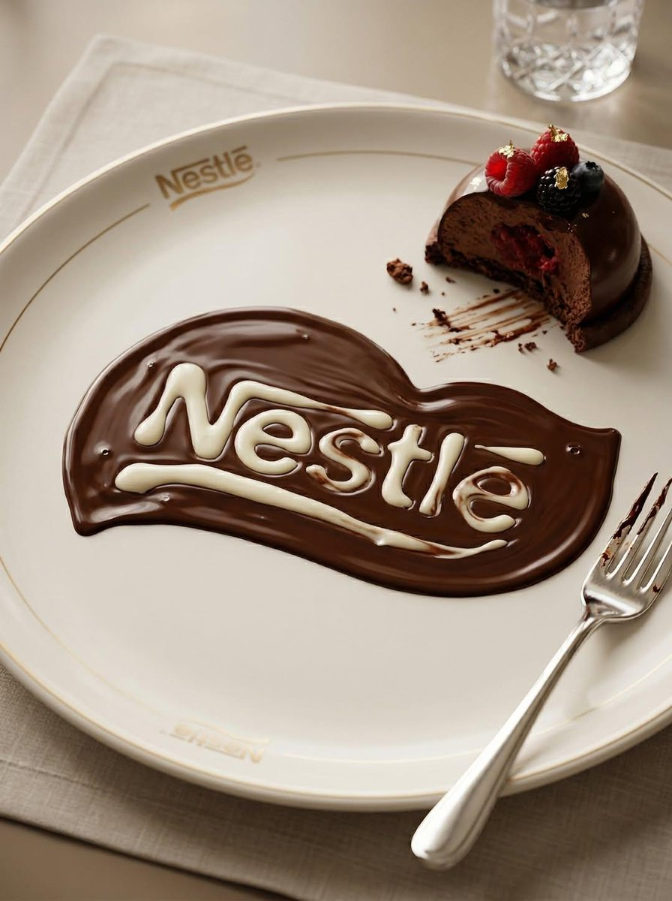
案例2740: Transform the uploaded logo into a realistic dessert scene wh...
Transform the uploaded logo into a realistic dessert scene where the logo silhouette is formed naturally by melted ch...
🎨 查看AI提示词
🇨🇳 中文提示词
将上传的标志转化为一个逼真的甜点场景，其中标志轮廓自然地由铺在盘子上的融化巧克力形成，同时盘子和甜点摆设也围绕相同的标志作为品牌识别进行细微设计。标志必须保持其精确的形状和比例，既以干净的品牌元素形式出现（雕刻或印在盘子上），又以通过真实流体行为形成的自然融化巧克力形态出现。 材质细节： - 浓郁的黑巧克力，高粘度并具有光泽反光表面。 - 较厚的区域形成平滑的巧克力池，较薄的区域则呈现柔和的渐隐...
🇬🇧 English Prompt
Transform the uploaded logo into a realistic dessert scene where the logo silhouette is formed naturally by melted chocolate spread across a plate, while the plate and dessert presentation are also su...
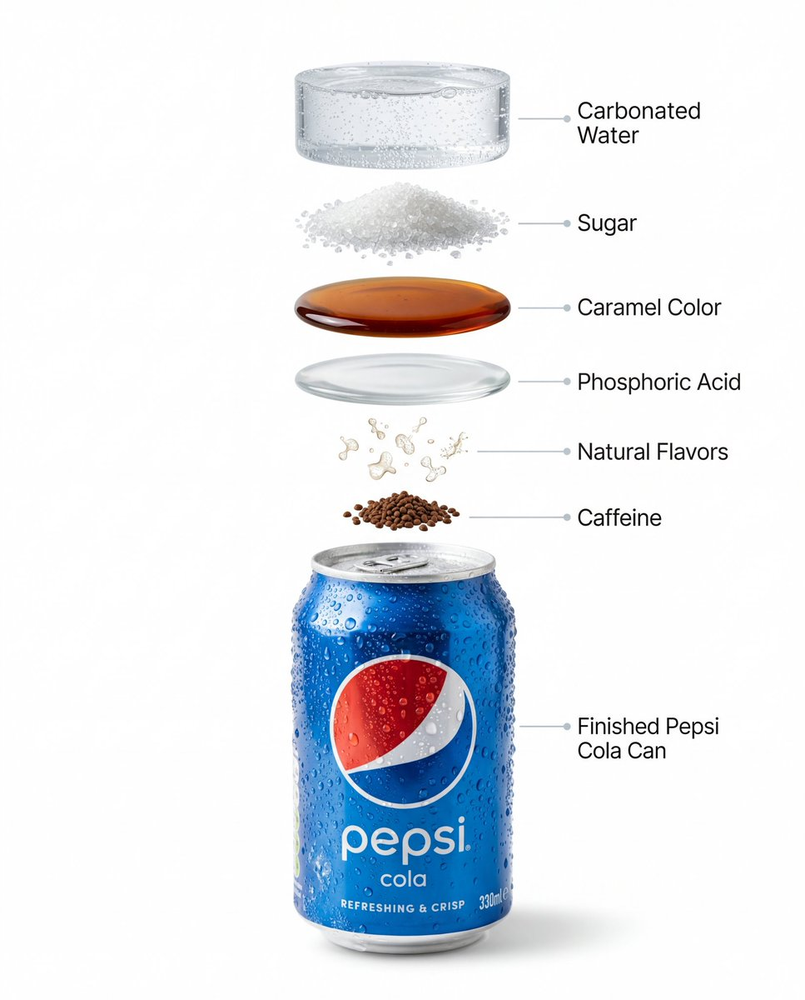
案例2727: High quality professional product photography of a chilled Pe...
High quality professional product photography of a chilled Pepsi can with condensation water droplets and a refreshin...
🎨 查看AI提示词
🇨🇳 中文提示词
高质量的专业产品摄影：一罐冰镇的百事可乐，表面有冷凝水珠，呈现清爽、冰凉的外观。铝制罐体显得干净利落且光泽逼真，具有真实的高光、细微反射以及可见的冰冷质感。以极简的商业饮料广告风格拍摄，置于纯白背景，配以柔和的自然阴影。焦点锐利，构图极其简洁，现代美学。
🇬🇧 English Prompt
High-quality professional product photography of a chilled Pepsi can with condensation water droplets and a refreshing, icy look. The aluminum can appears crisp and glossy with realistic highlights, s...
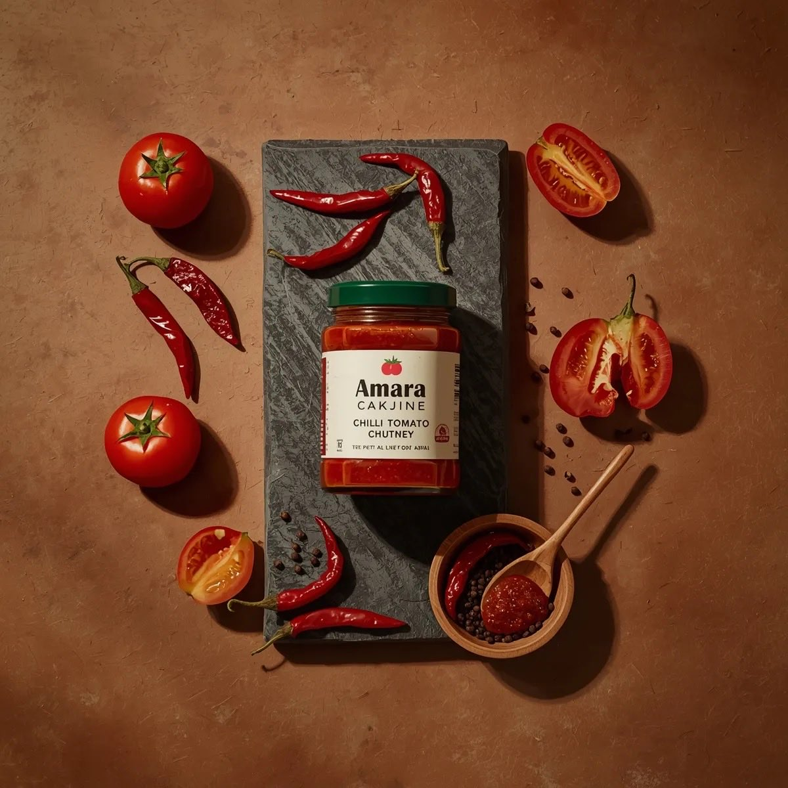
案例2723: Top down premium food photography of a glass jar of chili tom...
Top down premium food photography of a glass jar of chili tomato chutney placed on a dark stone slab, surrounded by f...
🎨 查看AI提示词
🇨🇳 中文提示词
俯视高级美食摄影，一罐玻璃瓶装的辣椒番茄酸酱放在一块深色石板上，周围摆放着新鲜红番茄、切片番茄、红辣椒、黑胡椒粒，以及一个装有酱料并配有小勺的小木碗。温暖的土色背景、柔和定向光、丰富的阴影、高对比度、简约造型、商业产品拍摄、超细节、4K。
🇬🇧 English Prompt
Top-down premium food photography of a glass jar of chili tomato chutney placed on a dark stone slab, surrounded by fresh red tomatoes, sliced tomatoes, red chili peppers, black peppercorns, and a sma...
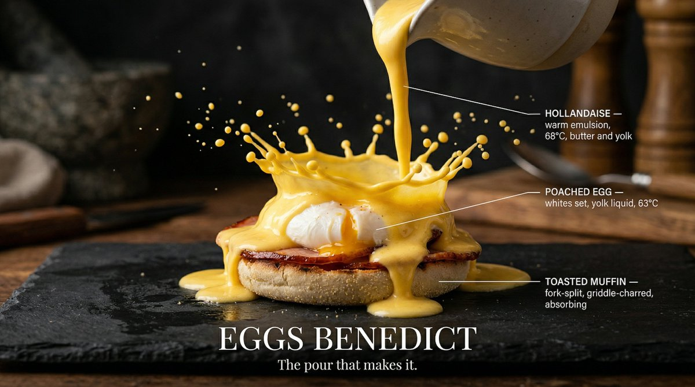
案例2690: [DISH] at the precise moment of a dramatic [LIQUID] pour in u...
[DISH] at the precise moment of a dramatic [LIQUID] pour in ultra high speed photography, liquid cascade frozen mid f...
🎨 查看AI提示词
🇨🇳 中文提示词
[DISH] 在超高速摄影中，精确瞬间的戏剧性 [LIQUID] 倾洒，液体瀑布在下落中以完美清晰度定格。主角 [DISH] 位于磨砂 [COLOR] 表面中央，[LIQUID] 从上方以一条电影般的丝带状流下，捕捉温暖的单一光源，击中表面时分裂并分支成悬浮的水滴与丝线。撞击瞬间定格的溅落皇冠，水滴在完美弧线中悬浮。每一处表面纹理都极其真实：闪亮、蒸汽升腾、酱汁在慢动作中汇聚。每个元素都用极细的线...
🇬🇧 English Prompt
[DISH] at the precise moment of a dramatic [LIQUID] pour in ultra high-speed photography, liquid cascade frozen mid-fall in perfect clarity. Hero [DISH] center on matte [COLOR] surface, [LIQUID] pouri...
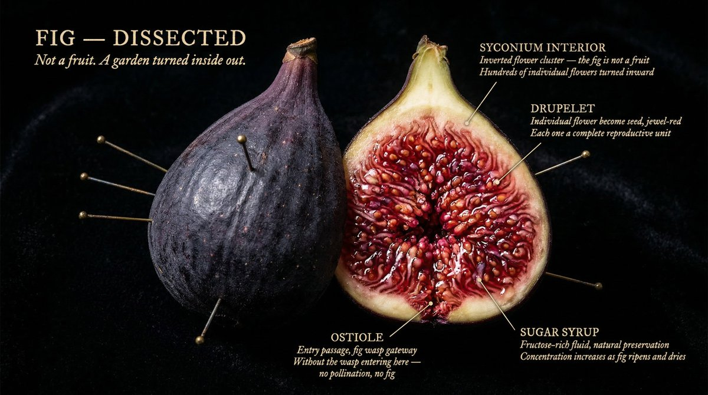
案例2667: [NATURAL OBJECT] dissected as if by a master naturalist who f...
[NATURAL OBJECT] dissected as if by a master naturalist who found it in the wild. Split and pinned open like a specim...
🎨 查看AI提示词
🇨🇳 中文提示词
[自然物] 被一位在野外发现它的大自然学家般解剖。像标本一样剖开并用别针固定，但灯光却像卡拉瓦乔为《国家地理》工作时那样照明。 每一处内部结构都以其自身的物质真实发光。剖面锋利得令人感到暴烈。内部之美令人觉得神圣。整体物体同在，一半完好无损，一半被打开至核心，每一层都以痴迷般的分辨率呈现。 背景：纯黑色天鹅绒。物体在其中悬浮，仿佛既珍贵又危险。 标签紧贴其上，带手写质感的衬线体，绝不飘浮：“...
🇬🇧 English Prompt
[NATURAL OBJECT] dissected as if by a master naturalist who found it in the wild. Split and pinned open like a specimen, but lit as if Caravaggio worked for National Geographic. Every internal structu...
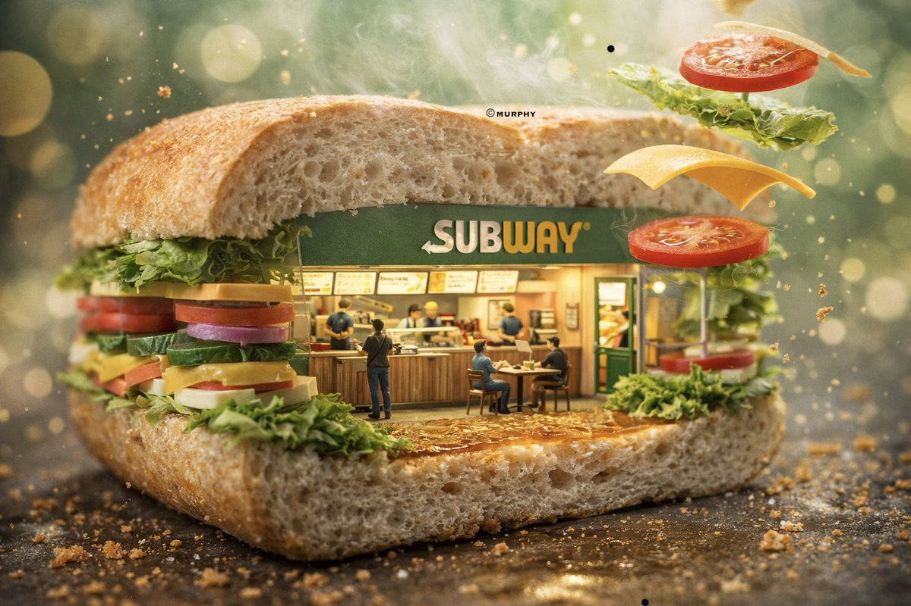
案例2664: Ultra realistic 3D miniature diorama of a [BRAND NAME] enviro...
Ultra realistic 3D miniature diorama of a [BRAND NAME] environment built inside a giant [ICONIC OBJECT OF BRAND], sho...
🎨 查看AI提示词
🇨🇳 中文提示词
超写实的3D微型场景模型，展示了一个构建在巨型[品牌标志性物品]内部的[品牌名称]环境，以干净的剖面图或部分切开的视角呈现，揭示出一个精细的内部世界。 在结构内部，存在一个完全细节化的微型[品牌特定环境：商店 / 咖啡馆 / 餐厅 / 展厅]，有逼真的人类活动，例如员工工作、顾客互动，以及自然的叙事瞬间。 该[物体]既充当容器又作为环境，其材料和元素被整合进建筑中（例如，层次、纹理、表面形成地...
🇬🇧 English Prompt
Ultra-realistic 3D miniature diorama of a [BRAND NAME] environment built inside a giant [ICONIC OBJECT OF BRAND], shown in a clean cross-section or partially cut-open view revealing a detailed interio...
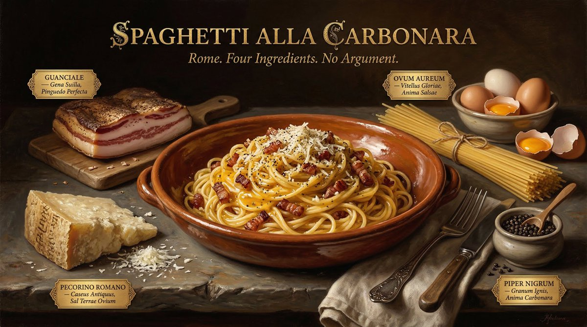
案例2626: [DISH] painted in the style of a Dutch Golden Age or Italian...
[DISH] painted in the style of a Dutch Golden Age or Italian Renaissance still life, hyperrealistic oil painting aest...
🎨 查看AI提示词
🇨🇳 中文提示词
[DISH] 以荷兰黄金时代或意大利文艺复兴静物画风格绘制，超写实油画美学，具有戏剧性的明暗法照明。主角菜肴置于中央，放在深色天鹅绒或石材表面上，周围以巴洛克式构图摆放其食材。来自左上方的单一戏剧性光源以绘画般的层次照亮每一种质感：闪亮的蛋白质、半透明的酱汁、宝石般明亮的蔬菜、酥脆的面包、散落的香草。每种配料都用小而典雅的金色装饰牌标注，带有华丽边框，采用铜版体标签："[INGREDIENT] ...
🇬🇧 English Prompt
[DISH] painted in the style of a Dutch Golden Age or Italian Renaissance still life, hyperrealistic oil painting aesthetic with dramatic chiaroscuro lighting. Hero dish at center on a dark velvet or s...
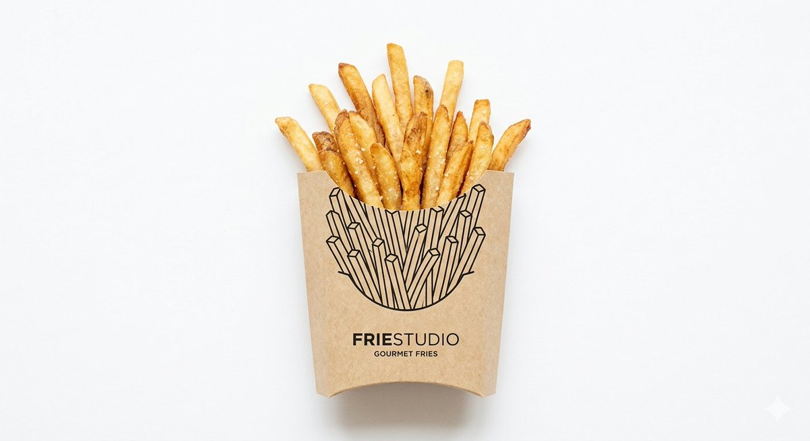
案例2613: minimal studio shot on pure white background, real [Food Name...
minimal studio shot on pure white background, real [Food Name] emerging from a paper packaging, the visible part outs...
🎨 查看AI提示词
🇨🇳 中文提示词
纯白背景下的极简棚拍，真实的[食品名称]从纸质包装中露出，包装外可见部分为完全逼真的照片级呈现，同一食物的延续部分以干净的黑色线描插画形式直接印在包装表面，与真实食物形状完美对齐，插画严格局限于包装材质上，不悬浮、不延伸到背景，真实与印刷插画之间无缝衔接，现代极简品牌风格，俯视构图，柔和投影。
🇬🇧 English Prompt
minimal studio shot on pure white background, real [Food Name] emerging from a paper packaging, the visible part outside the packaging is fully photorealistic, the continuation of the same food is dra...
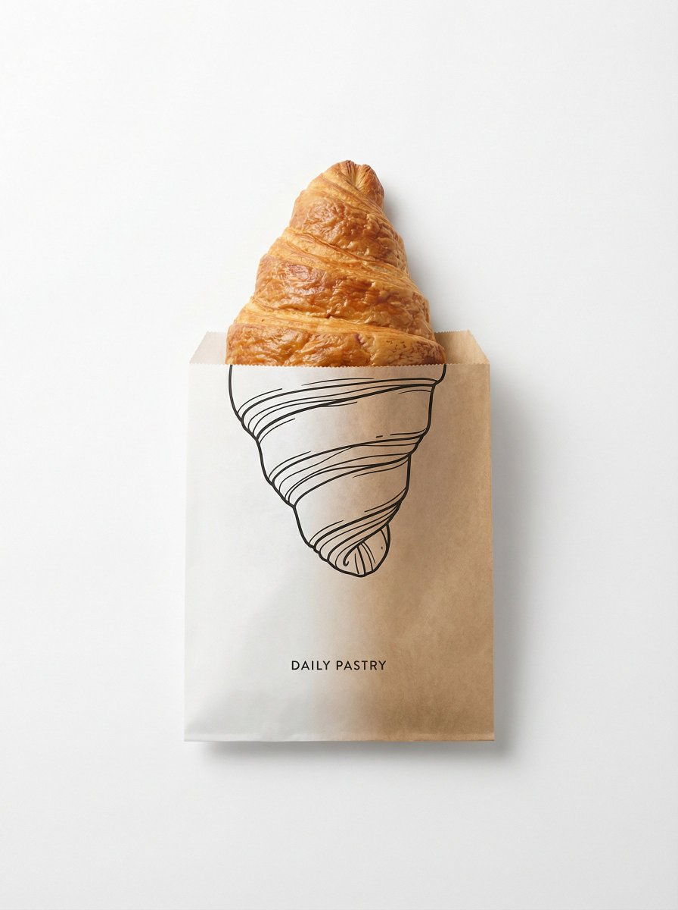
案例2611: minimal studio shot on pure white background, real [Food Name...
minimal studio shot on pure white background, real [Food Name] emerging from a paper packaging, the visible part outs...
🎨 查看AI提示词
🇨🇳 中文提示词
极简影棚拍摄，纯白背景，真实的[食物名称]从纸质包装中伸出，包装外可见部分完全为照片级写实，同一食物的延续以简洁的黑线插画直接印刷在包装表面，与真实食物形状完美对齐，插画严格局限于包装材质上，不悬浮、不延伸到背景，真实与印刷插画之间无缝衔接，现代极简品牌风格，俯拍构图，柔和阴影
🇬🇧 English Prompt
minimal studio shot on pure white background, real [Food Name] emerging from a paper packaging, the visible part outside the packaging is fully photorealistic, the continuation of the same food is dra...
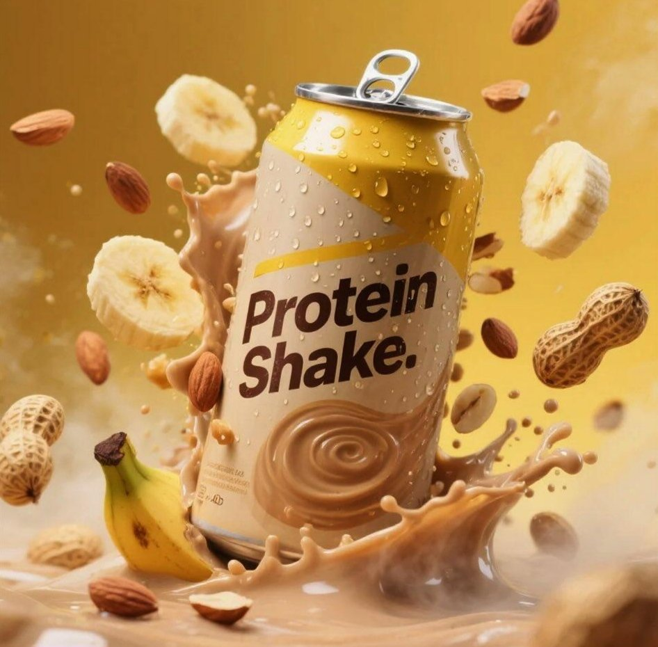
案例2591: Hyper realistic product advertisement of a protein shake can...
Hyper realistic product advertisement of a protein shake can with yellow and cream design, surrounded by floating ban...
🎨 查看AI提示词
🇨🇳 中文提示词
超写实的蛋白质奶昔罐产品广告，黄色和奶油色设计，周围漂浮着香蕉片、杏仁和花生，动态的牛奶飞溅环绕罐身，表面有光泽的冷凝水滴，充满活力的暖黄色背景，高速飞溅摄影，超细致纹理，商业食品摄影风格，戏剧性灯光，8K。
🇬🇧 English Prompt
Hyper-realistic product advertisement of a protein shake can with yellow and cream design, surrounded by floating banana slices, almonds, and peanuts, dynamic milk splash bursting around the can, glos...
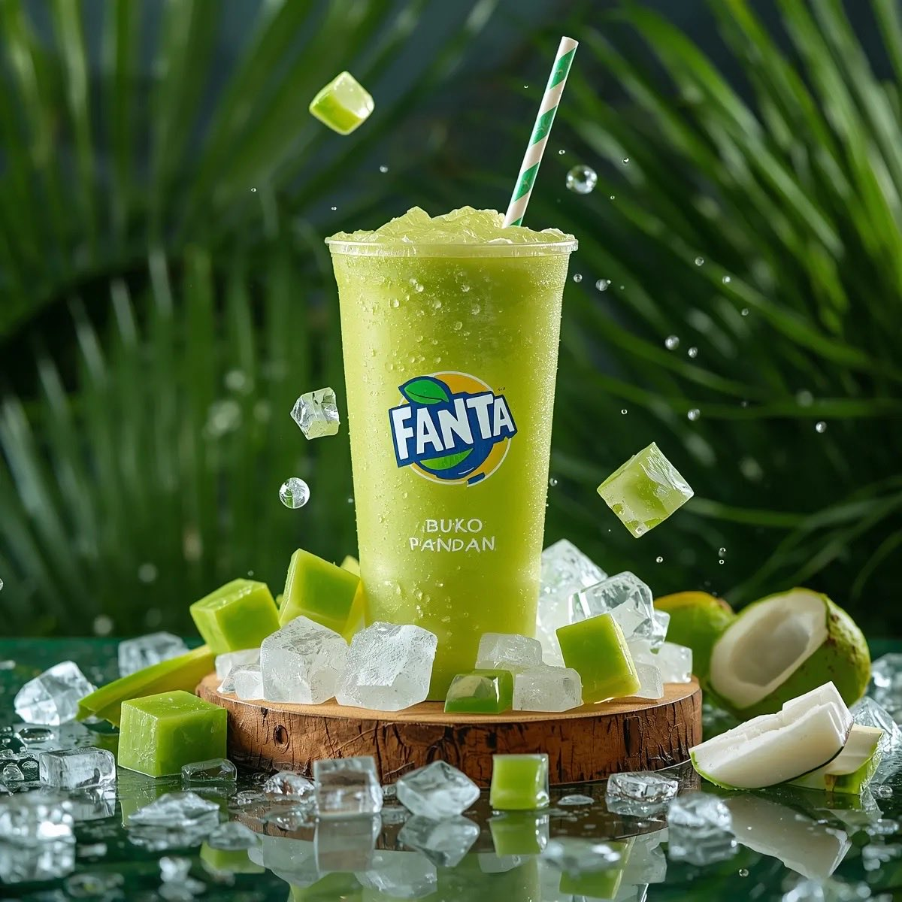
案例2550: Ultra realistic commercial product photography of a cold gree...
Ultra realistic commercial product photography of a cold green tropical drink in a transparent plastic cup with Fanta...
🎨 查看AI提示词
🇨🇳 中文提示词
超逼真的商业产品摄影：一杯冰冷的绿色热带饮料，装在带有 Fanta Buko Pandan 品牌标识的透明塑料杯中，杯内碎冰，杯身上的凝结水珠，绿条纹纸吸管，周围漂浮着冰块和班兰果冻块，杯底周围有椰子碎块和班兰叶，饮料置于一个小木质平台上，反光的湿润表面上散落着冰块，热带丛林叶子背景，鲜明的绿色色调，清爽的夏日饮品广告，戏剧性工作室灯光，浅景深，微距细节，高速溅落摄影，8K 超细节，专业广告拍摄。...
🇬🇧 English Prompt
Ultra-realistic commercial product photography of a cold green tropical drink in a transparent plastic cup with Fanta Buko Pandan branding, crushed ice inside, condensation droplets on the cup, green ...
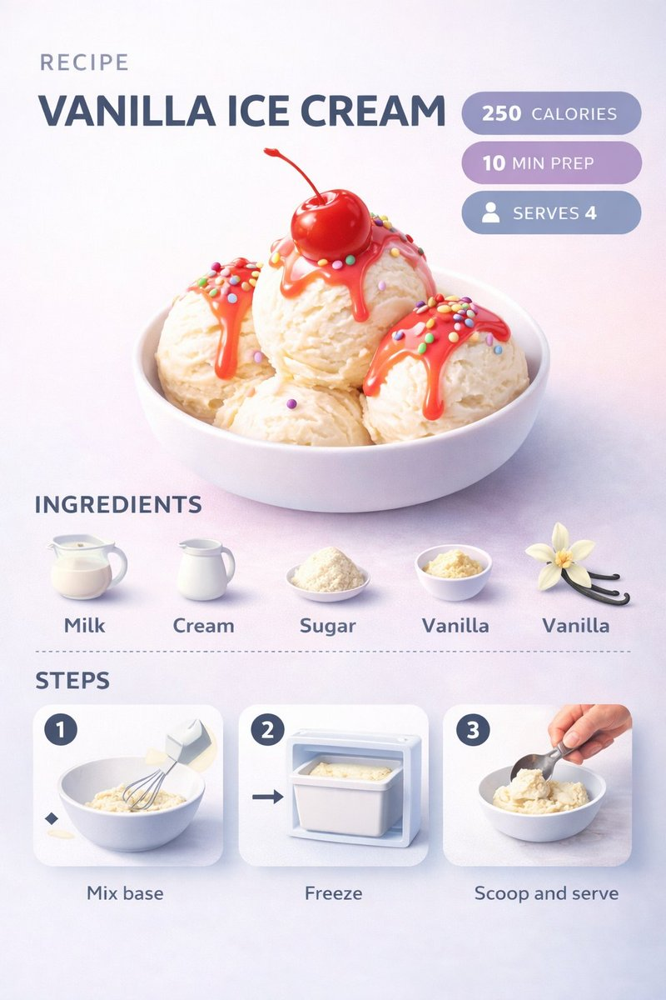
案例2544: Ultra clean modern recipe infographic. Showcase Vanilla Ice C...
Ultra clean modern recipe infographic. Showcase Vanilla Ice Cream Scoops with syrup and toppings in angled perspectiv...
🎨 查看AI提示词
🇨🇳 中文提示词
超简洁现代食谱信息图。展示以倾斜视角呈现的香草冰淇淋球，配以糖浆和配料。 原料部分：牛奶、奶油、糖、香草的图标。 步骤部分：用编号面板展示混合底料、冷冻、舀球。 附加信息：以徽章形式显示卡路里、准备时间、份量。 视觉风格：甜点信息图，使用柔和的粉彩色、柔和渐变、现代排版。 构图指南：以冰淇淋球为主视觉，周围环绕原料和步骤。 光线与背景：柔和的甜点风格打光，背景简约。 输出：1080×...
🇬🇧 English Prompt
Ultra-clean modern recipe infographic. Showcase Vanilla Ice Cream Scoops with syrup and toppings in angled perspective. Ingredients Section: Icons for milk, cream, sugar, vanilla. Steps Section: Mix...
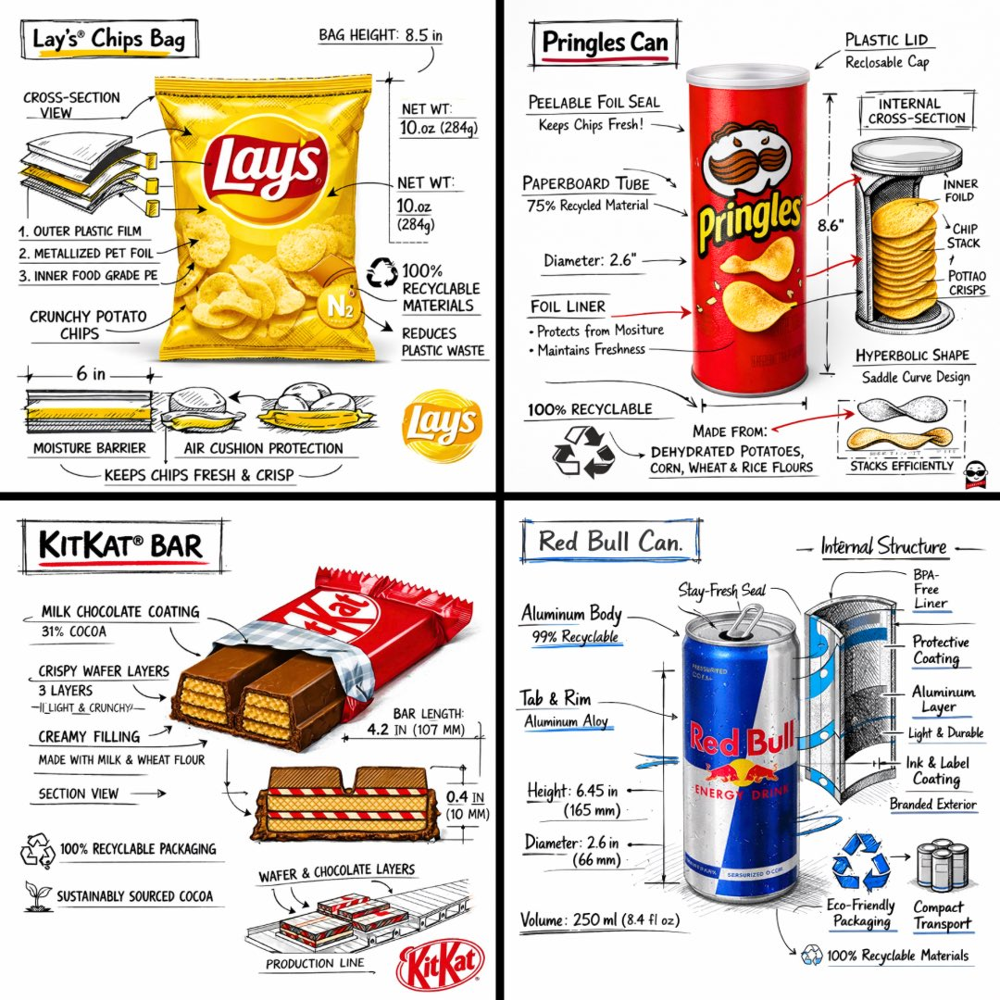
案例2494: Create a branded technical infographic of a [SNACK], combinin...
Create a branded technical infographic of a [SNACK], combining a realistic photograph or photoreal render of the prod...
🎨 查看AI提示词
🇨🇳 中文提示词
创建一个 [SNACK] 的品牌化技术信息图，将产品的真实照片或照片级渲染与直接覆盖在上面的技术注释叠层结合。使用黑色墨水风格的线条绘图，搭配策略性的 [BRAND COLOR] 强调色（建筑草图风格）在纯白色工作室背景上，包括： • 主要组件标签 • 内部横截面，显示结构、分层或内部设计 • 尺寸、规格与尺寸参数 • 材料标注，含成分与数量 • 指示主要特征和结构完整性功能的箭头 • 示意性或截...
🇬🇧 English Prompt
Create a branded technical infographic of a [SNACK], combining a realistic photograph or photoreal render of the product with technical annotation overlays placed directly on top. Use black ink–style ...
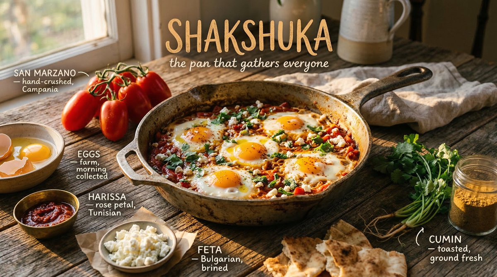
案例2491: [DISH] styled on a weathered [MATERIAL] surface, shot in pure...
[DISH] styled on a weathered [MATERIAL] surface, shot in pure golden hour light streaming from one side, casting long...
🎨 查看AI提示词
🇨🇳 中文提示词
摆设在风化的 [MATERIAL] 表面上，在纯正的金色时刻光线从一侧倾泻而下，投射出长长的温暖阴影。主菜置中，周围随意但富有艺术感地散落着原材料：整蔬菜、新鲜香草、打开的香料罐、亚麻布、木勺。每一表面质感超写实：木纹、冷凝水珠、香草油光泽、烧痕。食材标签为小巧手写风粉笔或墨水标签，置于每样食材旁："[INGREDIENT] — [origin, preparation]"。菜名以温暖的手写排版呈...
🇬🇧 English Prompt
[DISH] styled on a weathered [MATERIAL] surface, shot in pure golden hour light streaming from one side, casting long warm shadows. Hero dish center, surrounded by its raw ingredients casually scatter...
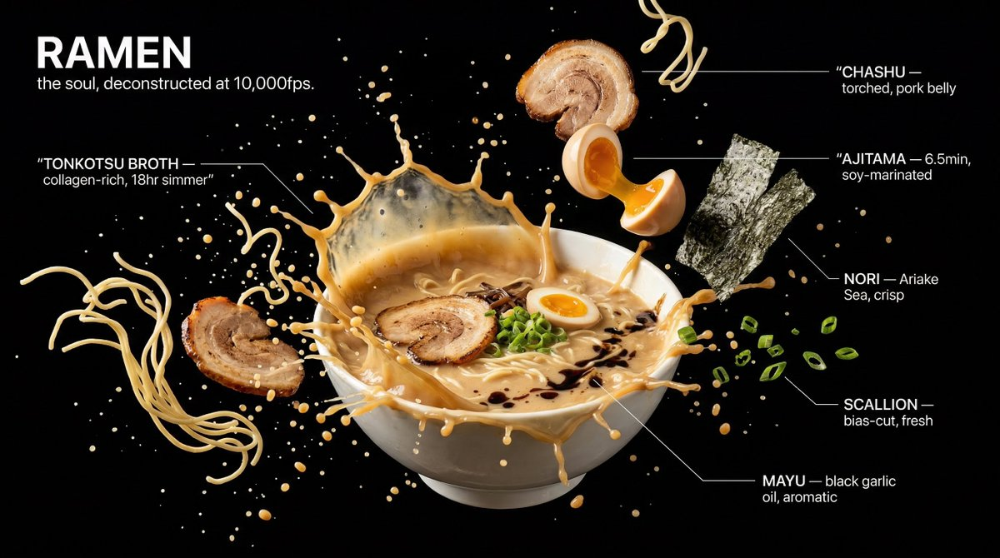
案例2444: [DISH] captured at the exact millisecond of a dramatic liquid...
[DISH] captured at the exact millisecond of a dramatic liquid explosion, high speed photography frozen in time, every...
🎨 查看AI提示词
🇨🇳 中文提示词
[DISH]在液体爆炸的精确瞬间被捕捉，高速摄影定格时间，每一滴液体都如刀锋般悬浮在空中。中央的主角[DISH]完美无缺且极度真实，周围是其酱汁、汤汁或糖浆自内向外爆发的精心编排的爆炸效果。液滴捕捉到单一光源的暖光，宛如液体钻石。每个漂浮的食材或液滴都用超细线条以大写字母标注：“[INGREDIENT] [描述词]”。菜名采用加粗编辑排版：“[DISH NAME]”。副标题：“[TAGLINE]...
🇬🇧 English Prompt
[DISH] captured at the exact millisecond of a dramatic liquid explosion, high-speed photography frozen in time, every droplet suspended mid-air with razor precision. Hero [DISH] at center perfectly in...
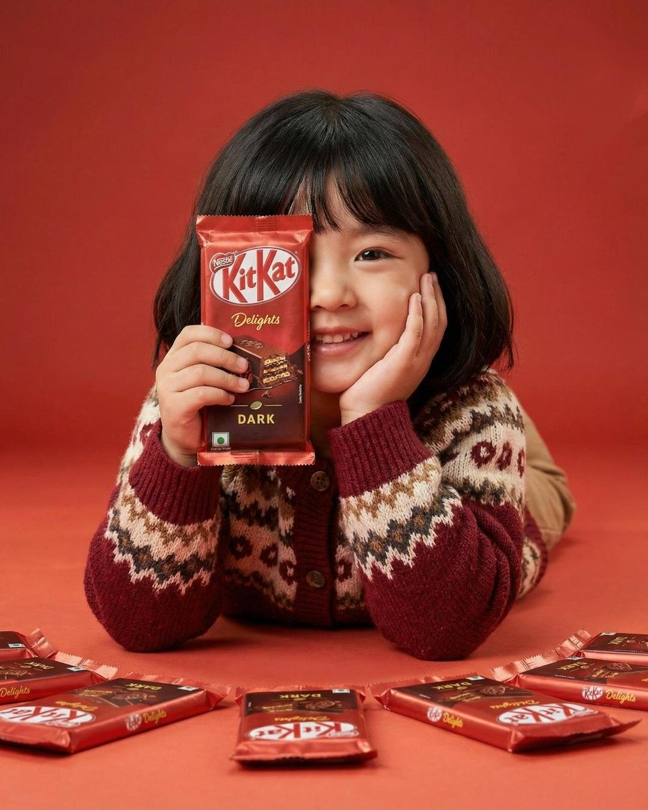
案例2427: A cute young girl with short black hair and bangs smiling whi...
A cute young girl with short black hair and bangs smiling while holding a red KitKat Dark chocolate bar covering one...
🎨 查看AI提示词
🇨🇳 中文提示词
一个可爱的年轻女孩，留着短黑发和齐刘海，微笑着用一根红色 KitKat Dark 巧克力棒遮住一只眼睛，脸颊靠在手上，穿着一件舒适的红色和米色相间图案的冬季毛衣。背景和桌子为纯亮红色。几根 KitKat 巧克力摆放在她面前的桌子上。柔和的工作室灯光、鲜艳的色彩、商业食品广告风格、超逼真摄影、清晰对焦、高细节、50mm 镜头、浅景深、专业产品摄影、居中构图。
🇬🇧 English Prompt
A cute young girl with short black hair and bangs smiling while holding a red KitKat Dark chocolate bar covering one eye, resting her cheek on her hand, wearing a cozy red and beige patterned winter s...
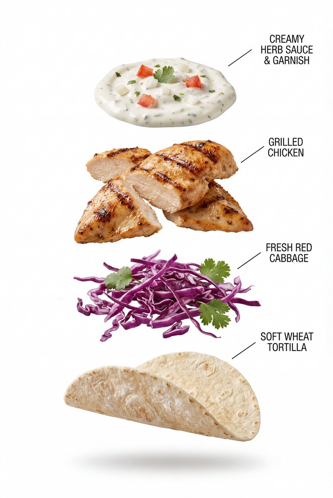
案例2405: A high quality, professional product photograph of a grilled...
A high quality, professional product photograph of a grilled chicken taco filled with juicy grilled chicken pieces wi...
🎨 查看AI提示词
🇨🇳 中文提示词
高质量、专业的产品摄影，展示一份烤鸡肉卷饼，其内夹多汁的烤鸡肉块，表面可见烤痕，配以新鲜切丝的红甘蓝和奶油白酱，表面点缀着切成小丁的番茄、洋葱和香菜。全部放在软小麦卷饼皮内。卷饼看起来新鲜、风味十足且填充充足，纹理清晰、食材鲜明。极简风格，背景为纯白色的纯色背景，带有柔和、自然的阴影。8K分辨率、超清对焦，干净、现代的美食摄影美学。
🇬🇧 English Prompt
A high-quality, professional product photograph of a grilled chicken taco filled with juicy grilled chicken pieces with visible char marks, fresh shredded red cabbage, and creamy white sauce topped wi...
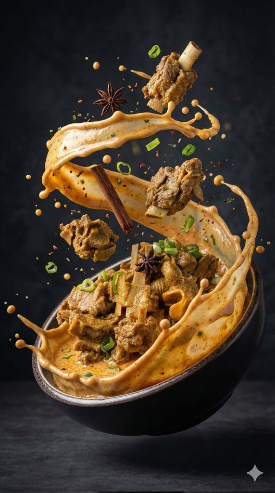
案例2404: Ultra realistic cinematic food photography of a bowl of rich...
Ultra realistic cinematic food photography of a bowl of rich spicy meat soup exploding upward in a dynamic splash, te...
🎨 查看AI提示词
🇨🇳 中文提示词
超写实的电影感食物摄影：一碗浓郁辛辣的肉汤向上爆发成动态飞溅，带骨的嫩肉块悬浮于半空，奶油质感的咖喱汤形成旋转的液体丝带，八角、肉桂棒、青葱和各种香料在运动中悬浮，戏剧性的深色影棚背景，高速抓拍飞溅瞬间，肉与汤的宏观质感细节，蒸汽升腾，浅景深，鲜艳的暖色调，高端美食广告风格，超细致的液体物理表现，8K，完美构图。
🇬🇧 English Prompt
Ultra-realistic cinematic food photography of a bowl of rich spicy meat soup exploding upward in a dynamic splash, tender bone-in meat pieces floating mid-air with creamy curry broth forming swirling ...
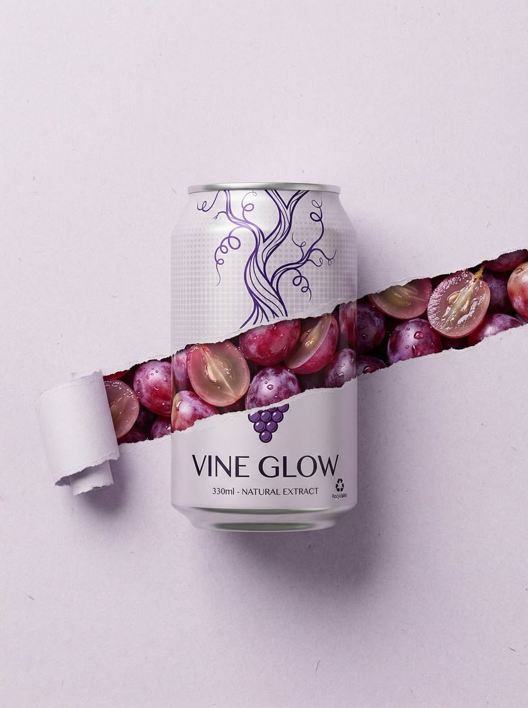
案例2403: Grape Can – “Vine Glow”
Grape Can – “Vine Glow” Minimalist product photography of a 330ml aluminum can labeled “VINE GLOW – Natural Extract”,...
🎨 查看AI提示词
🇨🇳 中文提示词
葡萄罐 – “VINE GLOW” 极简主义产品摄影：一只标有“VINE GLOW – 天然提取物”的330ml铝罐，居中置于干净的浅灰色背景上。罐身以优雅的紫色藤蔓线描图案为特色。一个真实的水平撕纸效果横穿罐体和背景中部，露出内部的新鲜红色和紫色葡萄，带有水滴和光泽质感。柔和的影棚灯光，高细节，锐利对焦，商业广告风格，现代包装设计，对称构图，超逼真，8K分辨率。
🇬🇧 English Prompt
Grape Can – “Vine Glow” Minimalist product photography of a 330ml aluminum can labeled “VINE GLOW – Natural Extract”, centered on a clean light grey background. The can features elegant purple vine l...
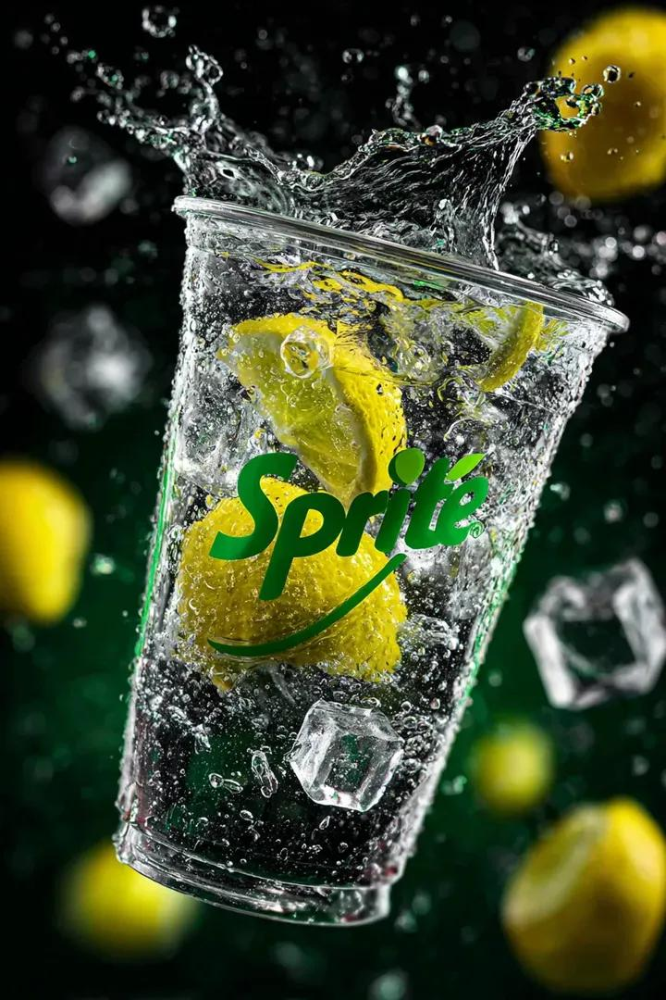
案例2390: A transparent cup filled with fresh Sprite lemon soda floatin...
A transparent cup filled with fresh Sprite lemon soda floating in the air, surrounded by sparkling lemon lime soda sp...
🎨 查看AI提示词
🇨🇳 中文提示词
一个透明杯盛着新鲜的雪碧柠檬汽水，悬浮在空中，周围环绕着闪耀的柠檬青柠汽水飞溅、明亮的冰块，以及在饮料周围爆裂的微小碳酸泡泡。杯子采用绿色极简文字设计，呈现清新、干净的品牌形象。超现实的饮料产品摄影，配以专业工作室照明，纹理细节清晰，具备显微级清晰度，仿佛用索尼 A7S 拍摄。黑色与霓虹绿色背景突出新鲜感 --stylize 250
🇬🇧 English Prompt
A transparent cup filled with fresh Sprite lemon soda floating in the air, surrounded by sparkling lemon-lime soda splashes, bright ice cubes, and tiny carbonation bubbles bursting around the drink. T...
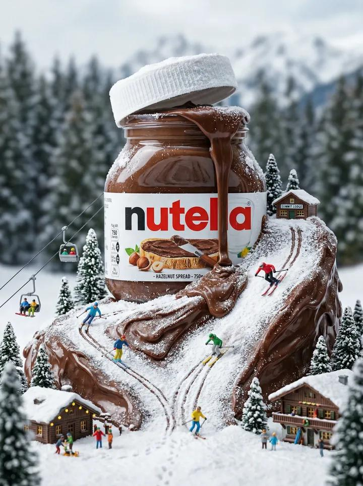
案例2385: "cinematic miniature winter world built around a giant Nutell...
{ "cinematic miniature winter world built around a giant Nutella jar, thick chocolate hazelnut spread flowing out for...
🎨 查看AI提示词
🇨🇳 中文提示词
{ "prompt": "围绕一个巨大的 Nutella 罐构建的电影级微缩冬日世界，浓厚的巧克力榛子酱流淌出来，形成光泽的山坡滑雪道，微小的滑雪者在覆盖着薄薄雪粉的巧克力山坡上滑行，微缩阿尔卑斯村庄，木屋和松树，带有小吊厢的滑雪缆车载着人们，雪林背景与远处的山脉，柔和的冬日光线，融化巧克力与雪的超真实质感，微距倾斜移轴摄影，奇幻美食景观，商业美食广告风格，高度细致，8K 分辨率", "n...
🇬🇧 English Prompt
{ "cinematic miniature winter world built around a giant Nutella jar, thick chocolate hazelnut spread flowing out forming a glossy mountain ski slope, tiny skiers skiing down the chocolate hill cove...
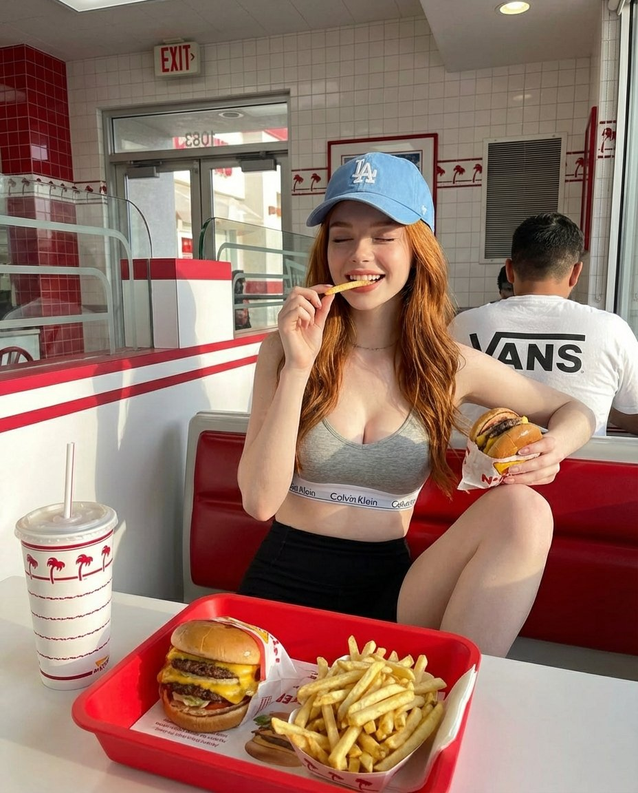
案例2369: "prompt": "A young red haired woman sitting inside a bright r...
{ "prompt": "A young red haired woman sitting inside a bright retro style fast food restaurant, eating a cheeseburger...
🎨 查看AI提示词
🇨🇳 中文提示词
{ "提示": "一位年轻的红发女子坐在一家明亮的复古风快餐店里，正在吃一只芝士汉堡。她坐在靠大窗的红色人造革卡座里，阳光从窗外洒进来。她一边咬着汉堡一边眨眼。她面前的桌子上有一个红色托盘，托盘上放着一个汉堡、一些薯条和一杯带有红色棕榈树图案的白色杯装软饮。餐厅内部以白色瓷砖墙和红色点缀为特色，墙上有一幅装框的画。灯光温暖自然，营造出一种随性、抓拍般的氛围。", "风格": "照片写实",...
🇬🇧 English Prompt
{ "prompt": "A young red-haired woman sitting inside a bright retro-style fast food restaurant, eating a cheeseburger. She is seated in a red vinyl booth by a large window with sunlight streaming in...
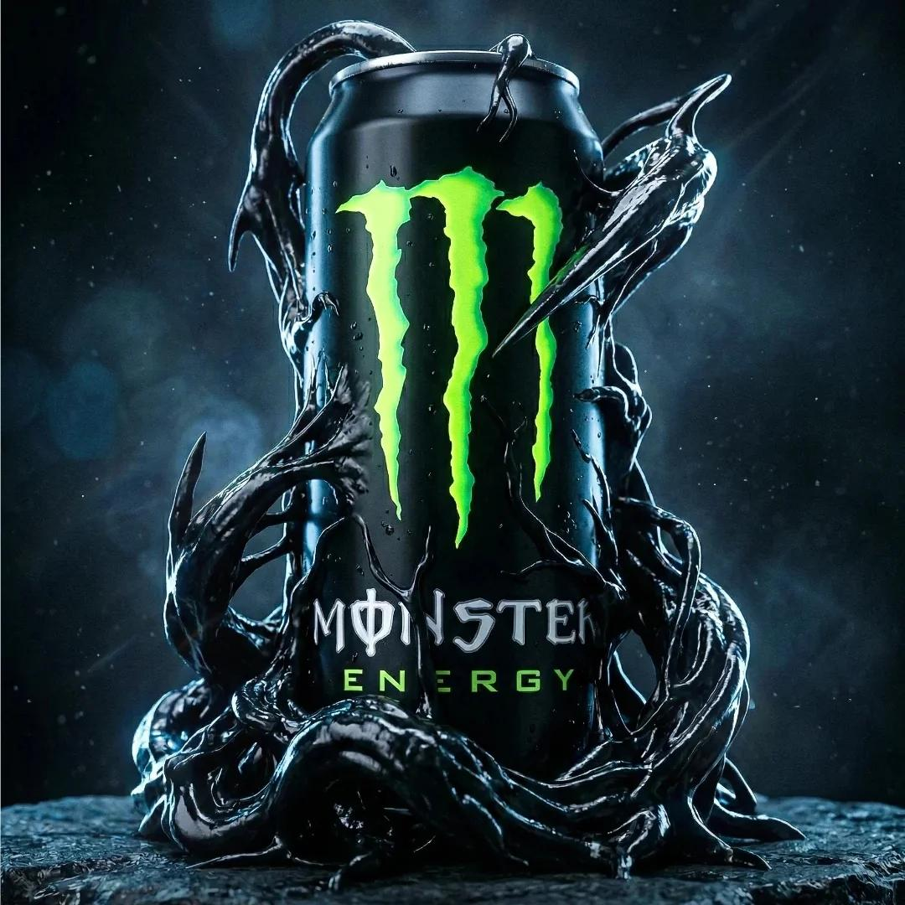
案例2359: Cinematic ultra high end product photography of an official M...
Cinematic ultra high end product photography of an official Monster Energy drink can a standard vertical black alumin...
🎨 查看AI提示词
🇨🇳 中文提示词
电影级超高端产品摄影：一罐官方 Monster Energy 饮料罐，标准竖形黑色铝罐，饰有标志性的霓虹绿色爪子标志——置于暗沉、粗糙、有纹理的表面上。该罐正被一种浓稠、光滑、漆黑的共生体状液体吞噬并似乎被其附体，该液体灵感来源于 2018 年鲁本·弗莱舍（Ruben Fleischer）执导电影《毒液》中的有机外星共生体。粘稠物表现得像有生命的实体——肌肉感、掠食性且半有意识——形成细长、腱状的...
🇬🇧 English Prompt
Cinematic ultra-high-end product photography of an official Monster Energy drink can a standard vertical black aluminum energy drink can featuring the iconic neon reen claw logo of Monster Energy - s...
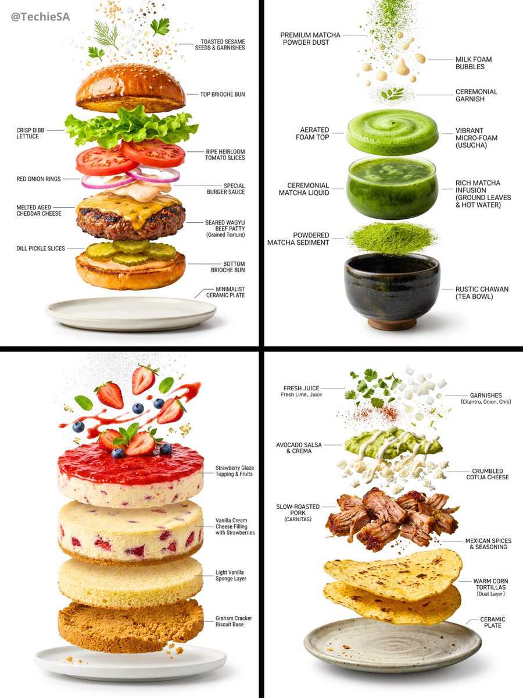
案例2347: Create a hyper realistic exploded vertical infographic compos...
Create a hyper realistic exploded vertical infographic composition of [FOOD]. At the top, characteristic particles, d...
🎨 查看AI提示词
🇨🇳 中文提示词
创建一个关于 [FOOD] 的超写实纵向分解信息图构图。 顶部：与该食品相关的特征性颗粒、液滴或装饰，定格于半空中。 下方：主要表面或顶层，具有丰富纹理和逼真的材质细节。 下面：核心食材层，展示结构、层次感和自然变化。 再下方：支撑底层或内部层，稍作分离以呈现构造。 底部：一个简约的盘子、碗、杯或与食品呈现相配的底座。 纯白背景、柔和的影棚灯光、每个悬浮元素下方的微妙投影、超清锐利焦点、单反微距摄...
🇬🇧 English Prompt
Create a hyper-realistic exploded vertical infographic composition of [FOOD]. At the top, characteristic particles, droplets, or garnishes associated with the food, frozen mid-air. Below it, the prima...
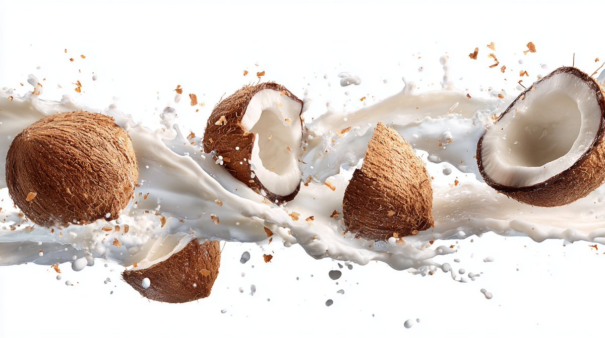
案例2334: a photo of sliced [ingredient] in mid air. the background is...
a photo of sliced [ingredient] in mid air. the background is white, with some [matching juice/sauce/liquid] splashing...
🎨 查看AI提示词
🇨🇳 中文提示词
一张被切成片的[ingredient]悬浮在空中的照片。白色背景，伴有一些[matching juice/sauce/liquid]飞溅。高速摄影捕捉到每片切片下落时的运动模糊，营造出令人兴奋的氛围。明亮的影棚灯光突出细节。食品广告。
🇬🇧 English Prompt
a photo of sliced [ingredient] in mid-air. the background is white, with some [matching juice/sauce/liquid] splashing around. high-speed photography captures motion blur as each slice falls, creating ...
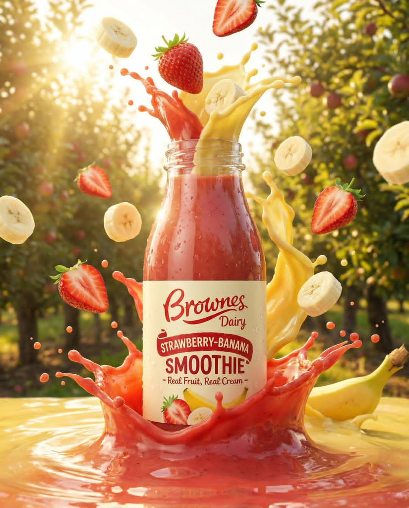
案例2308: Ultra realistic product ad of a premium fruit drink bottle, d...
Ultra realistic product ad of a premium fruit drink bottle, dynamic liquid splash frozen mid air, fresh fruits (orang...
🎨 查看AI提示词
🇨🇳 中文提示词
极度写实的高端果汁饮料瓶广告，动态液体飞溅在半空定格，围绕瓶子爆裂的新鲜水果（橙子、猕猴桃、草莓、芒果、百香果），电影感的金色阳光，户外果园/海滩场景，浅景深，鲜艳的色彩，光泽反射，高速摄影风格，极致细致的液体物理效果，干净的品牌标签，8K，商业广告，完美构图。
🇬🇧 English Prompt
Ultra-realistic product ad of a premium fruit drink bottle, dynamic liquid splash frozen mid-air, fresh fruits (orange, kiwi, strawberry, mango, passionfruit) exploding around the bottle, cinematic go...
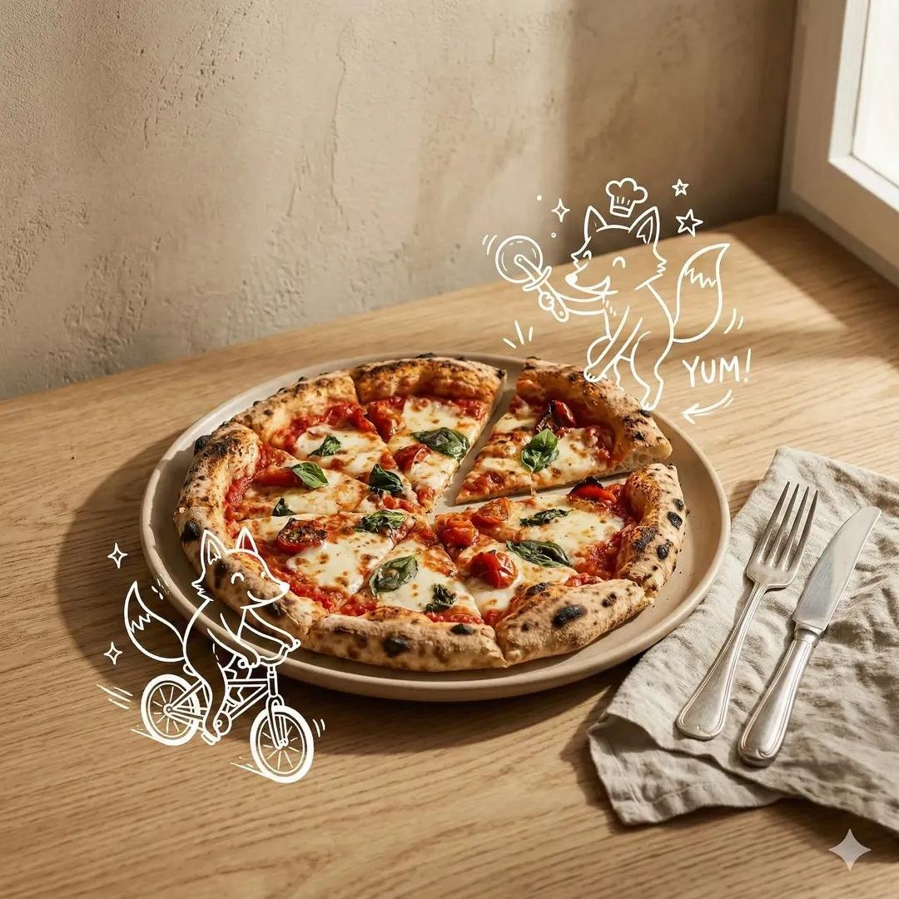
案例2305: [product setup],create minimalist product photo, clean warm s...
[product setup],create minimalist product photo, clean warm studio scene, textured beige wall background, soft direct...
🎨 查看AI提示词
🇨🇳 中文提示词
[产品设置], 创建极简产品照片, 干净温暖的工作室场景, 质感米色墙面背景, 柔和定向光创造长阴影, 简约桌面表面, 产品以俏皮概念构图进行摆放, 在产品上叠加的手绘白线涂鸦，描绘[角色]与产品互动, 混合媒介风格，融合真实摄影与素描插图, 高端品牌感, 浅景深, 极其逼真, 无额外文本, 无水印, 8K, 1:1
🇬🇧 English Prompt
[product setup],create minimalist product photo, clean warm studio scene, textured beige wall background, soft directional sunlight creating long shadows, simple tabletop surface, product arranged in ...
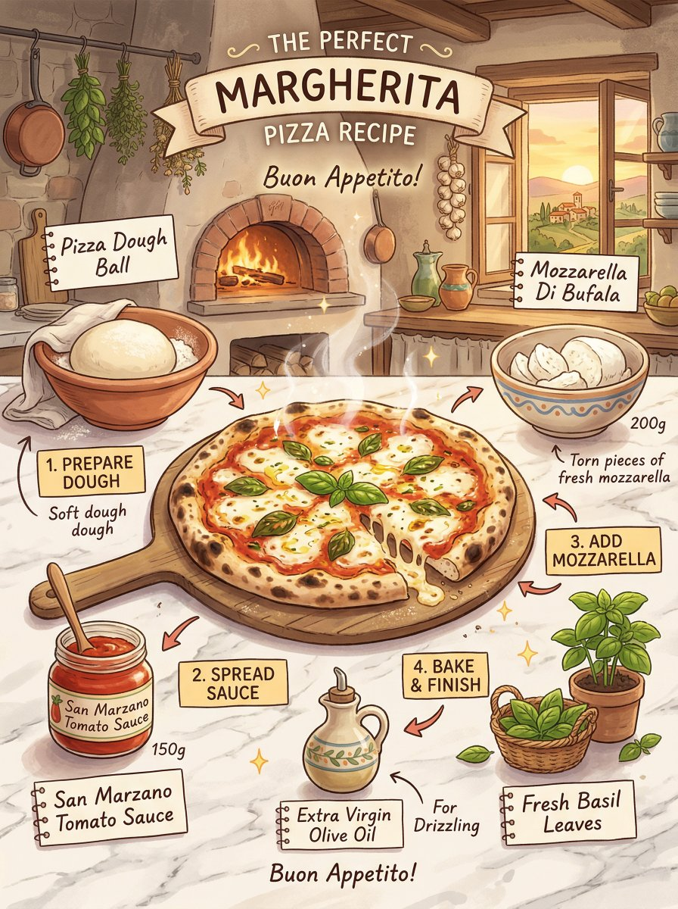
案例2291: margherita pizza recipe infographic, Studio Ghibli inspired i...
margherita pizza recipe infographic, Studio Ghibli inspired illustration, traditional Italian kitchen setting, warm g...
🎨 查看AI提示词
🇨🇳 中文提示词
玛格丽塔披萨食谱信息图，受吉卜力工作室启发的插画，传统意大利厨房场景，温暖的金色夕阳光，中央放整张披萨，奶酪冒泡，配料以可爱容器环绕插图展示，面团球，番茄酱 150g，马苏里拉 200g，新鲜罗勒叶，淋上橄榄油，手写笔记本风格的标签，柔和的粉彩色调，绘画质感，缕缕蒸汽与魔法般的光晕，俏皮而温馨的感觉，干净有序的布局，可读的文字，高细节
🇬🇧 English Prompt
margherita pizza recipe infographic, Studio Ghibli inspired illustration, traditional Italian kitchen setting, warm golden sunset light, whole pizza in center with bubbling cheese, ingredients illustr...
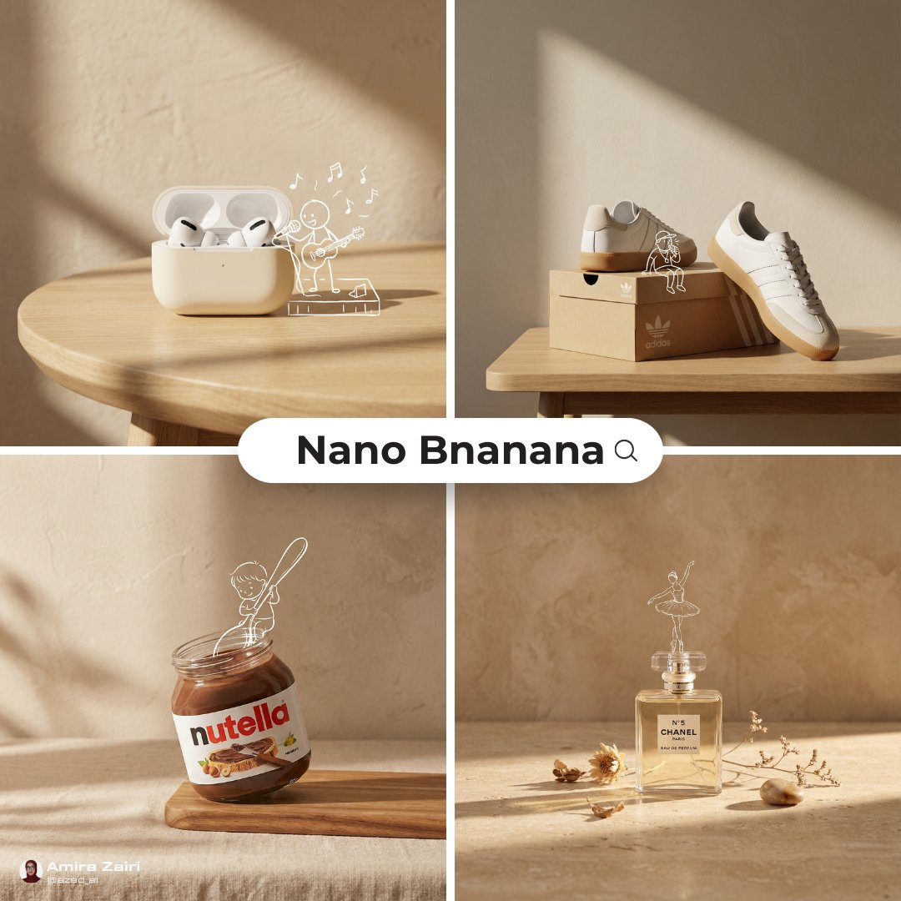
案例2280: [product setup], minimalist product photo, clean warm studio...
[product setup], minimalist product photo, clean warm studio scene, textured beige wall background, soft directional...
🎨 查看AI提示词
🇨🇳 中文提示词
[产品布置]，极简产品照片，干净温暖的摄影棚场景，质感米色墙面背景，柔和的定向阳光投射出长阴影，简约的桌面表面，产品以富有趣味的概念构图进行摆放，手绘白线涂鸦覆盖层，[角色] 与产品互动，混合媒介质感，融合真实摄影与素描插画，高端品牌感，浅景深，极致真实，无额外文本，无水印
🇬🇧 English Prompt
[product setup], minimalist product photo, clean warm studio scene, textured beige wall background, soft directional sunlight creating long shadows, simple tabletop surface, product arranged in a play...
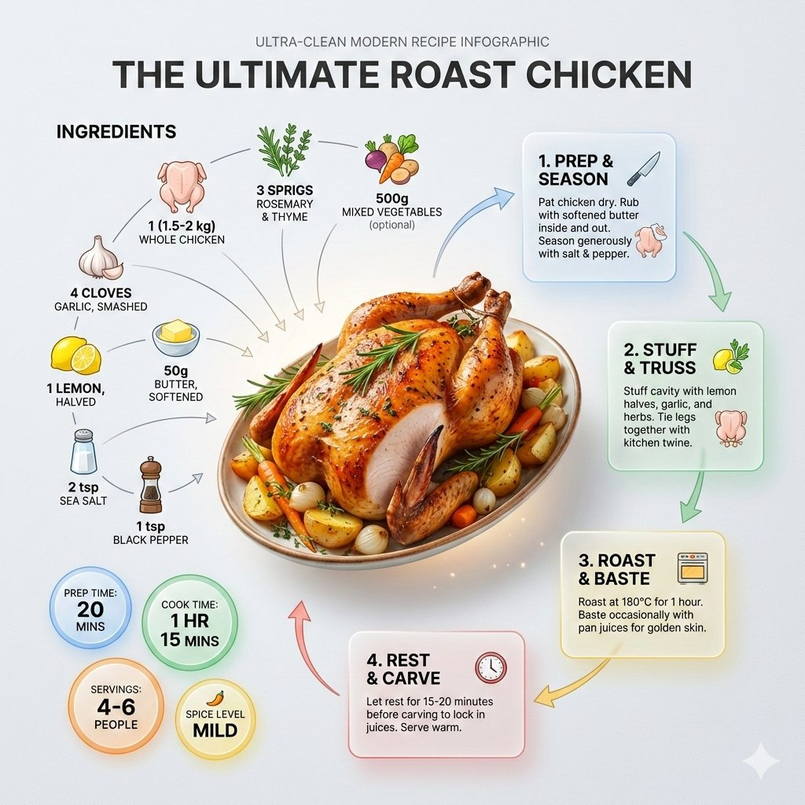
案例2279: Ultra clean modern recipe infographic. Showcase Roast chicken...
Ultra clean modern recipe infographic. Showcase Roast chicken in a visually appealing finished form—sliced, plated, o...
🎨 查看AI提示词
🇨🇳 中文提示词
极简现代食谱信息图。 以视觉吸引力的成品形式展示烤鸡——切片、摆盘或分份——以略带透视或倾斜视角悬浮呈现。将食材、步骤和小贴士围绕菜肴以动态的编辑排版布局排列，不局限于俯视图。 食材部分：为每种食材附上图标或小插图并标注用量。可将它们以簇状、列表或环形流的方式排列，视觉上与菜肴相连接。 步骤部分：用编号面板、箭头或连线展示准备步骤，在主菜周围形成合逻辑的流程。必要时加入小型烹饪图标（刀、锅、...
🇬🇧 English Prompt
Ultra-clean modern recipe infographic. Showcase Roast chicken in a visually appealing finished form—sliced, plated, or portioned—floating slightly in perspective or angled view. Arrange ingredients, s...
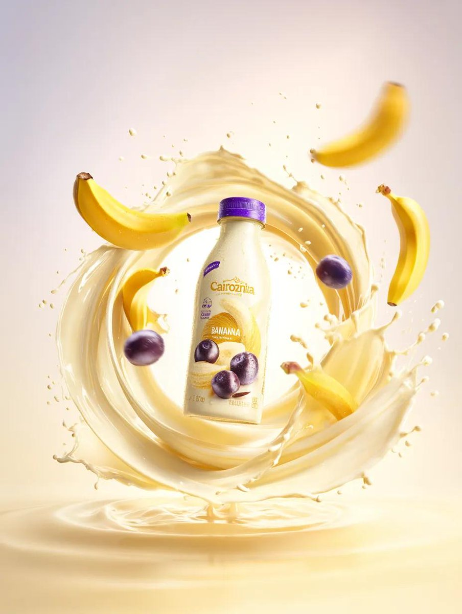
案例2250: Premium banana milk drink bottle surrounded by swirling milk...
Premium banana milk drink bottle surrounded by swirling milk splash, floating bananas and berries, dynamic liquid mot...
🎨 查看AI提示词
🇨🇳 中文提示词
高端香蕉牛奶饮料瓶，周围环绕着旋涡状的牛奶飞溅、漂浮的香蕉和浆果，动态液体运动，奶油质感，明亮的黄色背景，高速飞溅摄影，光泽感的产品照明，超写实，商业食品广告风格，清晰对焦，8K。
🇬🇧 English Prompt
Premium banana milk drink bottle surrounded by swirling milk splash, floating bananas and berries, dynamic liquid motion, creamy textures, bright yellow background, high-speed splash photography, glos...
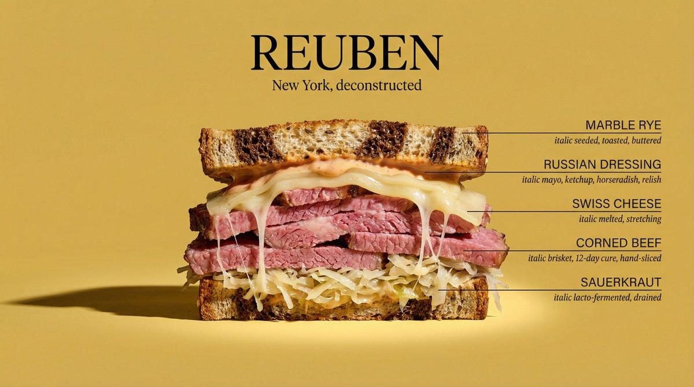
案例2219: Perfect cinematic cross section cut through [DISH], sliced cl...
Perfect cinematic cross section cut through [DISH], sliced cleanly down the center revealing every internal layer in...
🎨 查看AI提示词
🇨🇳 中文提示词
完美的电影感横截切面穿过 [DISH]，从中心整齐切开，完整揭示每一层的内部细节。切面正对着镜头，像味道的地质图。每个可见的层次都用一条细横线向右延伸标注——大写无衬线字体 "[INGREDIENT NAME]"，下方用斜体描述。背景：平滑哑光 [COLOR]。照明：从左侧投射的戏剧性侧光，投下长长的阴影，切面的单一暖色聚光灯。每种纹理都极其真实——可见的水分、气孔、焦痕、釉面和蒸汽。氛围：建筑风...
🇬🇧 English Prompt
Perfect cinematic cross-section cut through [DISH], sliced cleanly down the center revealing every internal layer in full detail. The cut face is facing the camera straight-on, like a geological diagr...
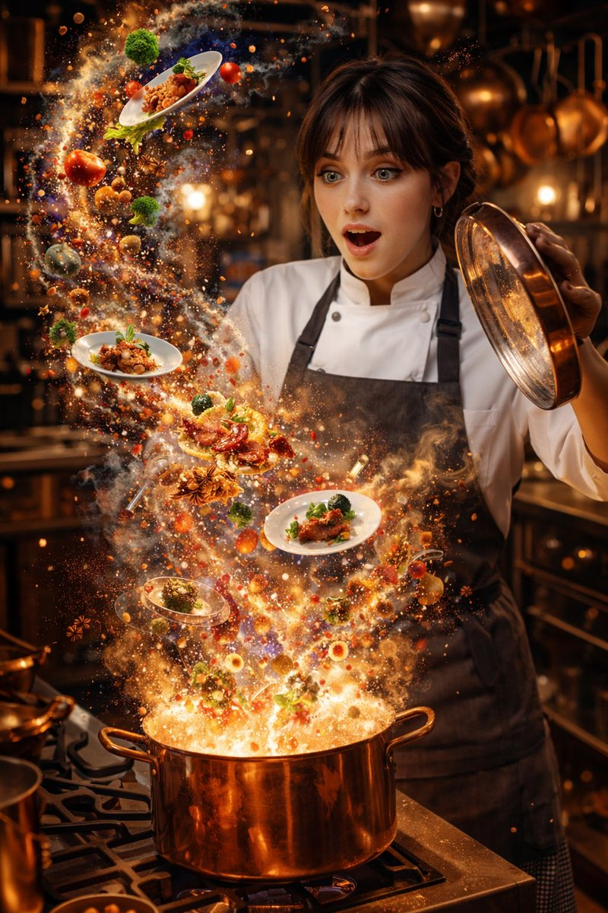
案例2209: A hyper realistic, high speed commercial photograph featuring...
A hyper realistic, high speed commercial photograph featuring a man with uploaded face as reference in a chef's jacke...
🎨 查看AI提示词
🇨🇳 中文提示词
一张超写实、高速的商业摄影作品，描绘一名以上传人脸为参考的男子，身着厨师外套、围裙和格子裤。他站在一间质朴且高档的厨房里，掀开一个大而冒着蒸气的铜锅盖，脸上露出纯粹惊叹的表情。锅中仿佛字面意义上的美食银河向上并向外爆发并悬浮静止：整颗烤制的香料、色彩鲜艳的蔬菜、浓郁酱汁的飞溅、漂浮着的精心摆盘的高级菜肴盘，以及充满金色亮粉的旋转芳香蒸汽云。食材在他周围形成螺旋星云。背景是一间温暖、虚化的专业厨房，...
🇬🇧 English Prompt
A hyper-realistic, high-speed commercial photograph featuring a man with uploaded face as reference in a chef's jacket, apron, and checkered trousers. He stands in a rustic, high-end kitchen, lifting ...
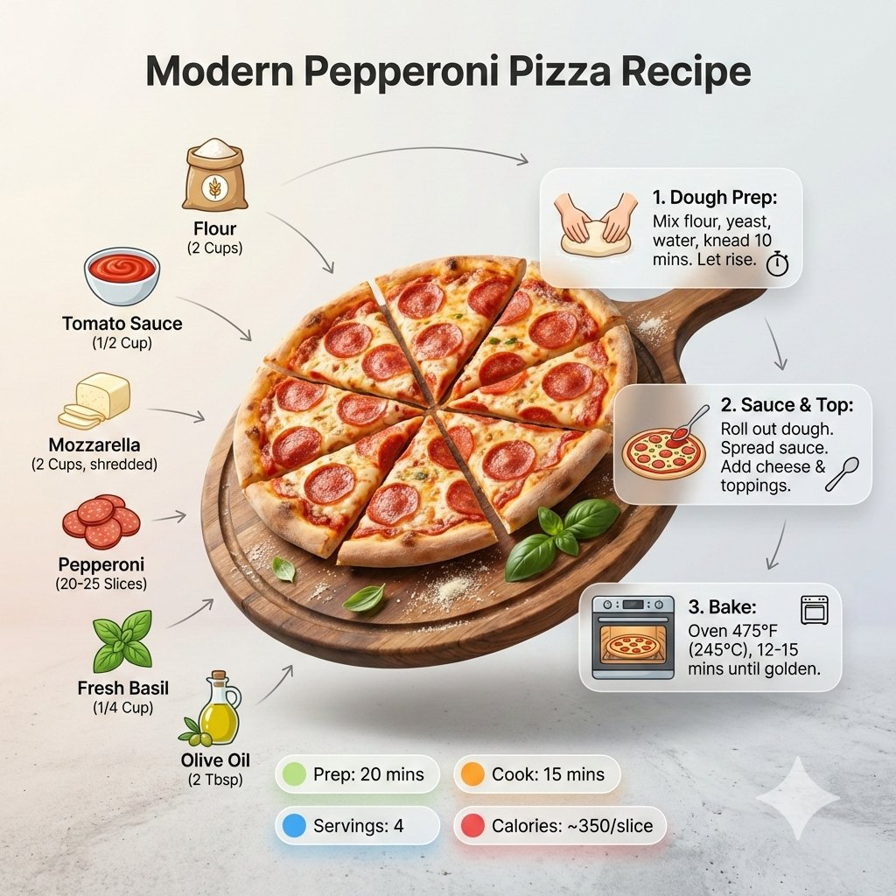
案例2183: Ultra clean modern recipe infographic. Showcase Pizza in a vi...
Ultra clean modern recipe infographic. Showcase Pizza in a visually appealing finished form—sliced, plated, or portio...
🎨 查看AI提示词
🇨🇳 中文提示词
极致干净的现代感食谱信息图。展示披萨在一个视觉上吸引人的成品形态——切片、摆盘或分份——在透视感或斜视角下略微浮动。将配料、步骤和提示围绕菜肴以动态编辑式布局呈现，不局限于自上而下的视角。配料部分：为每种材料配上图标或小插图，并标注数量。将它们以聚簇、清单或圆形流线的形式排布，并在视觉上与菜肴相连。步骤部分：用带编号的面板、箭头或线条展示准备步骤，围绕主菜形成一个合乎逻辑的流程。在合适处加入小型烹...
🇬🇧 English Prompt
Ultra-clean modern recipe infographic. Showcase Pizza in a visually appealing finished form—sliced, plated, or portioned—floating slightly in perspective or angled view. Arrange ingredients, steps, a...
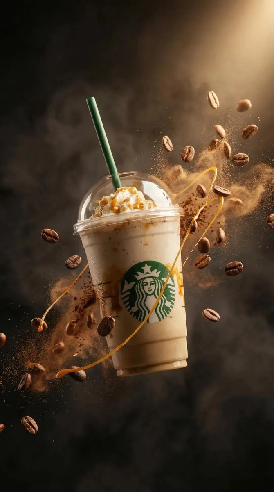
案例2181: Ultra realistic commercial product photography of a caramel f...
Ultra realistic commercial product photography of a caramel frappuccino in a clear plastic cup with dome lid and gree...
🎨 查看AI提示词
🇨🇳 中文提示词
超真实的商业产品摄影，拍摄一杯焦糖星冰乐，置于透明塑料杯中，杯盖为圆顶、配绿色吸管，顶部覆盖着鲜奶油和焦糖淋酱，杯子悬浮在半空中。咖啡豆在杯周围爆裂，空气中悬浮着细小的咖啡粉尘颗粒，动态的焦糖飞溅轨迹环绕着饮品旋转。黑暗的烟雾背景，来自上方的戏剧性聚光灯，暖金色轮廓照明，高对比度，锐利对焦，宏观细节，电影级景深，超详细纹理，高端饮品广告，8K分辨率。
🇬🇧 English Prompt
Ultra-realistic commercial product photography of a caramel frappuccino in a clear plastic cup with dome lid and green straw, topped with whipped cream and caramel drizzle, floating mid-air. Coffee be...
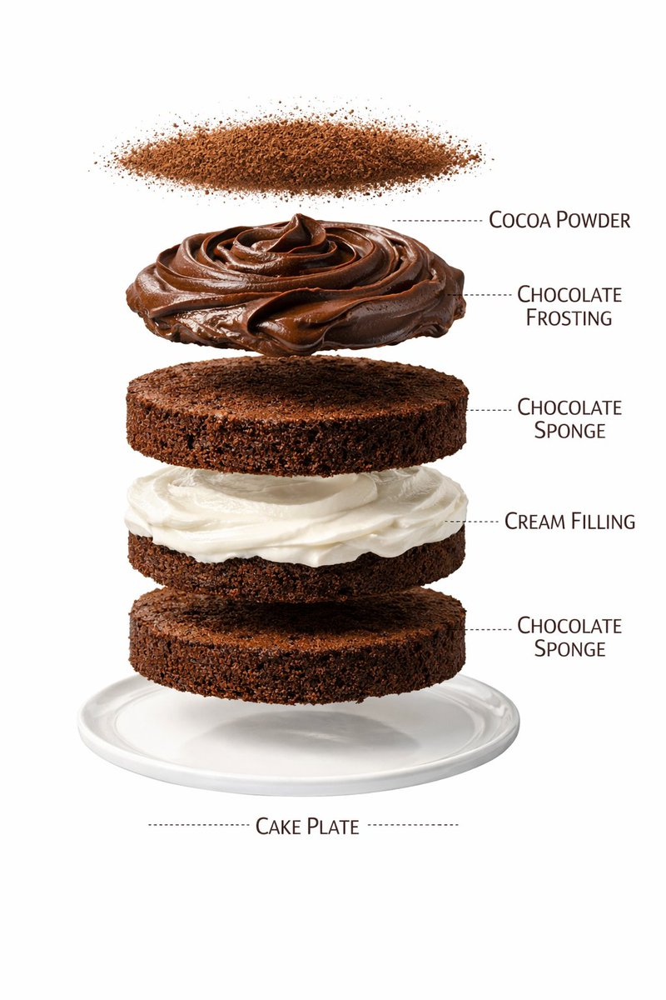
案例2148: Ultra realistic premium food photography of a layered chocola...
Ultra realistic premium food photography of a layered chocolate cake on a white plate, centered composition, three th...
🎨 查看AI提示词
🇨🇳 中文提示词
超逼真高端美食摄影：一块放在白色盘子上的多层巧克力蛋糕，居中构图，三层厚实湿润的巧克力海绵蛋糕，中间夹有光滑的白色奶油馅，表面覆盖光亮浓郁的巧克力甘纳许糖霜，装饰有新鲜覆盆子、深色巧克力卷、碎片和小金色糖珠，干净简约的淡灰色摄影棚背景，柔和漫射的专业灯光，柔和自然的阴影，超清晰的纹理细节展示多孔海绵蛋糕和奶油层，高端烘焙广告风格，浅景深，微距美食摄影效果，照片写实，8K 分辨率，优雅的甜点摆盘，无...
🇬🇧 English Prompt
Ultra-realistic premium food photography of a layered chocolate cake on a white plate, centered composition, three thick moist chocolate sponge layers with a smooth white cream filling in the middle, ...
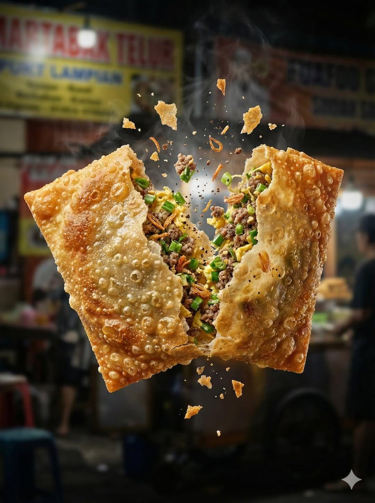
案例2125: Ultra realistic high speed food photography of a crispy golde...
Ultra realistic high speed food photography of a crispy golden fried snack breaking apart mid air, creamy savory fill...
🎨 查看AI提示词
🇨🇳 中文提示词
超逼真高速美食摄影：酥脆金黄的炸食在半空中裂成两半，奶油状咸香的内馅在两半之间拉伸，能看到鸡肉块、豌豆、胡萝卜、碎肉、面条或鸡蛋等食材。面包屑和碎片慢动作飞溅，热气上升，戏剧性的食物爆裂效果。场景为充满活力的夜市，伴随温暖的散景光点，背景摊位虚化。浅景深，85mm 镜头，f/1.8，对质地进行超清锐对焦，凸显脆皮涂层细节，动感捕捉，商业美食摄影风格，电影级照明，HDR，8K 分辨率，超高细节，杰作...
🇬🇧 English Prompt
Ultra-realistic high-speed food photography of a crispy golden fried snack breaking apart mid-air, creamy savory filling stretching between the halves, visible chunks of chicken, peas, carrots, minced...
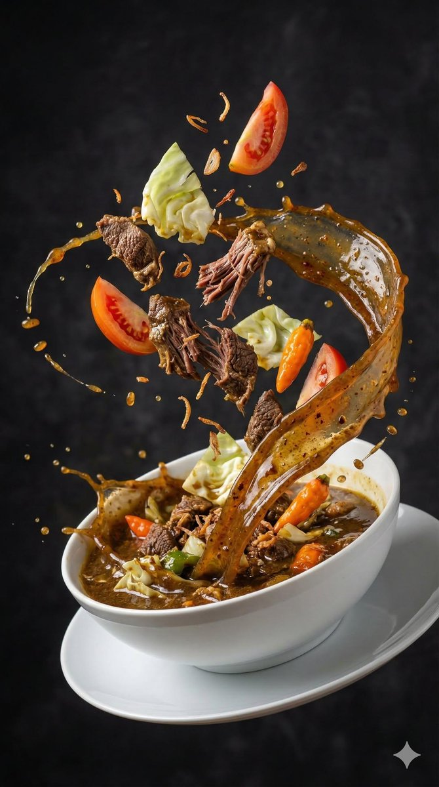
案例2113: "image prompt": {
{ "image prompt": { "subject": "Rich Asian soup", "action": "Ingredients exploding upward in mid air, swirling spiral...
🎨 查看AI提示词
🇨🇳 中文提示词
{ "图像提示": { "主题": "浓郁的亚洲汤", "动作": "配料在半空中向上爆开，汤汁旋转成螺旋飞溅形成动态的丝带形状，液体飞溅呈王冠状", "配料": [ "漂浮的牛肉片", "虾", "面条", "豆腐块", "辣椒", "香草", "番茄", "卷心菜" ...
🇬🇧 English Prompt
{ "image_prompt": { "subject": "Rich Asian soup", "action": "Ingredients exploding upward in mid-air, swirling spiral splash of broth forming a dynamic ribbon shape, liquid splash crown", ...
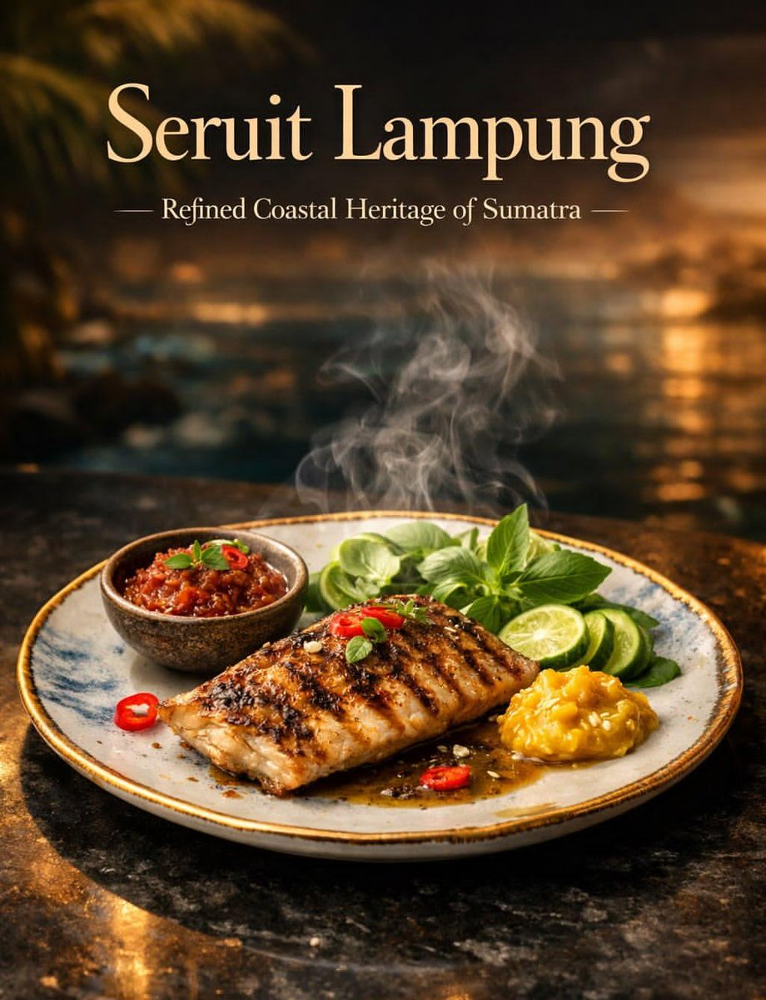
案例2091: Luxury cinematic food photography of traditional Indonesian “...
Luxury cinematic food photography of traditional Indonesian “Seruit Lampung” — beautifully grilled fish fillet glazed...
🎨 查看AI提示词
🇨🇳 中文提示词
奢华电影感美食摄影，主题为传统印尼“Seruit Lampung”——精美烤制的鱼片，刷有辣椒酱（sambal），饰以红辣椒片、新鲜罗勒和青柠角。摆放在雅致的陶瓷盘上，配有一小碗sambal和一份金黄的捣碎佐料。热菜上腾起可见的蒸汽。背景呈现精致的海滨落日晚景，水面上有柔和的散景反光，温暖的黄金时刻光线。拍摄于抛光大理石桌面。高档餐厅氛围，浅景深，戏剧性的食物造型，超写实，85mm 镜头，f/2....
🇬🇧 English Prompt
Luxury cinematic food photography of traditional Indonesian “Seruit Lampung” — beautifully grilled fish fillet glazed with chili sambal, garnished with red chili slices, fresh basil, and lime wedges. ...
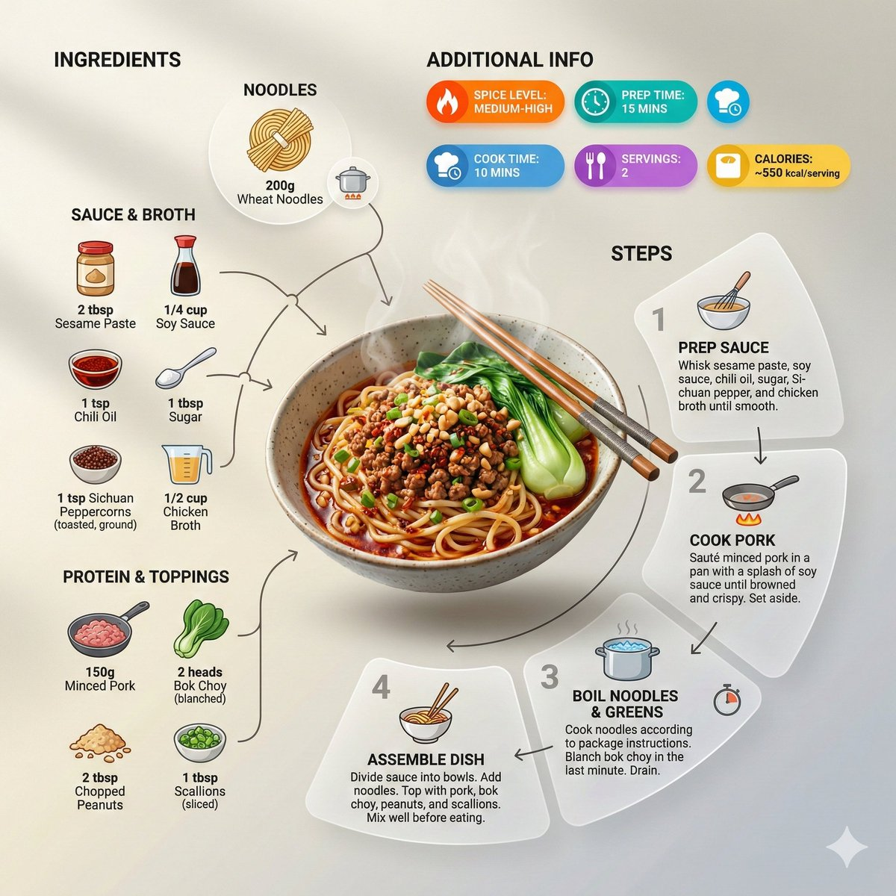
案例2067: Ultra clean modern recipe infographic. Showcase Noodles in a...
Ultra clean modern recipe infographic. Showcase Noodles in a visually appealing finished form—sliced, plated, or port...
🎨 查看AI提示词
🇨🇳 中文提示词
超简洁现代食谱信息图。 以视觉吸引的形式展示面条成品——切片、摆盘或分份——稍微以透视或倾斜视角悬浮展示。 在菜肴周围以动态的编辑式布局排列食材、步骤和提示，不局限于俯视图。 食材部分：为每种食材配上图标或小插图并标注用量。将它们以簇状、列表或环形流动的方式排列，并在视觉上与菜肴相连。 步骤部分：用编号面板、箭头或线条展示准备步骤，在主菜周围形成逻辑流程。必要时加入小型烹饪图标（刀、锅、烤箱...
🇬🇧 English Prompt
Ultra-clean modern recipe infographic. Showcase Noodles in a visually appealing finished form—sliced, plated, or portioned—floating slightly in perspective or angled view. Arrange ingredients, steps,...
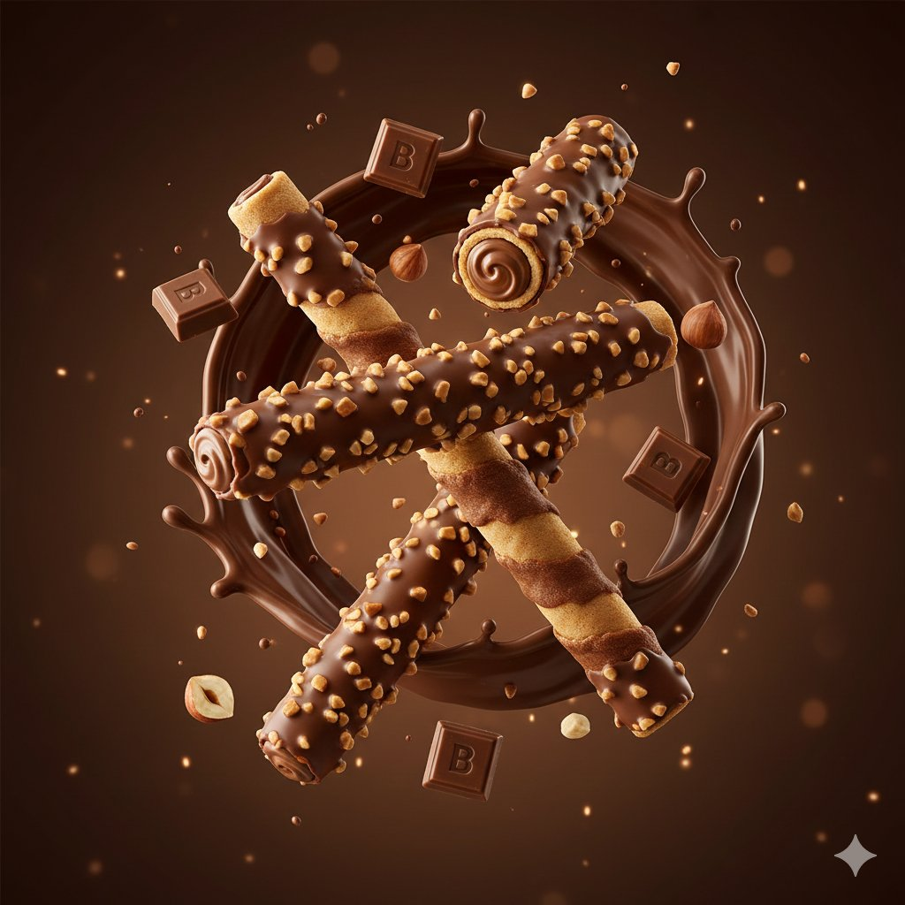
案例2044: "ENVIRONMENT": {
{ "ENVIRONMENT": { "Background": "Gradient(Dark Warm Brown)", "Atmospheric FX": ["Floating Particles", "Depth Blur",...
🎨 查看AI提示词
🇨🇳 中文提示词
{ "ENVIRONMENT": { "Background": "渐变（深暖棕）", "Atmospheric_FX": ["漂浮粒子", "景深模糊", "电影散景"], "Lighting": { "Type": "定向工作室暖光", "Highlights": "镜面光泽反射", "Shadow_Softness": "高" ...
🇬🇧 English Prompt
{ "ENVIRONMENT": { "Background": "Gradient(Dark_Warm_Brown)", "Atmospheric_FX": ["Floating_Particles", "Depth_Blur", "Cinematic_Bokeh"], "Lighting": { "Type": "Directional_Studio_W...
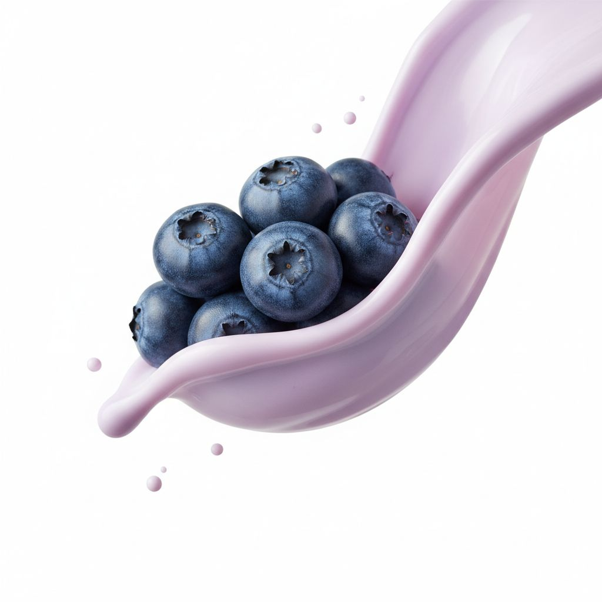
案例2043: A high speed studio photograph of a cluster of fresh blueberr...
A high speed studio photograph of a cluster of fresh blueberries suspended midair, softly wrapped by a gentle flow of...
🎨 查看AI提示词
🇨🇳 中文提示词
高速工作室摄影，一簇新鲜蓝莓悬在半空，被一股柔和的淡蓝莓酸奶缓缓包裹，液体运动平滑克制，极少的溅洒，质地厚实且奶油般顺滑，优雅弯曲的酸奶流贴合莓果，极少的小水珠，平静的流体动力学，照片级微距食品摄影，超真实质感，专业工作室照明，柔和的漫射高光，纯白背景，孤立的对象，干净的抠图，无 CGI，无 3D 渲染，无插画
🇬🇧 English Prompt
A high-speed studio photograph of a cluster of fresh blueberries suspended midair, softly wrapped by a gentle flow of pale blueberry yogurt, smooth and restrained liquid motion, minimal splash, thick ...
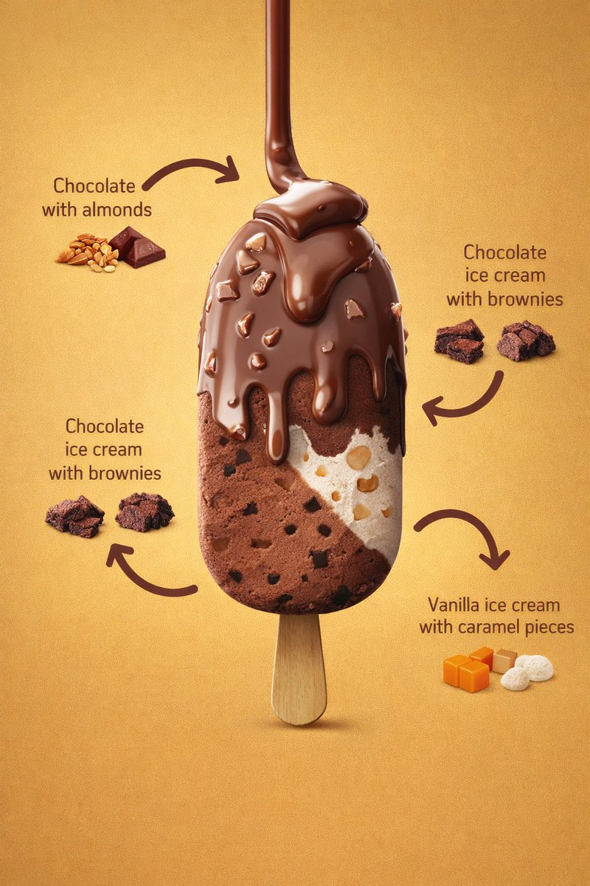
案例2027: "resolution": "8K",
{ "resolution": "8K", "aspect ratio": "3:4", "image type": "photorealistic commercial product render", "scene descrip...
🎨 查看AI提示词
🇨🇳 中文提示词
{ "resolution": "8K", "aspect_ratio": "3:4", "image_type": "逼真写实的商业产品渲染", "scene_description": { "main_subject": "插在木棒上的冰淇淋棒，垂直居中", "orientation": "直立、正面朝向、略带俯视角度", "composition": ...
🇬🇧 English Prompt
{ "resolution": "8K", "aspect_ratio": "3:4", "image_type": "photorealistic commercial product render", "scene_description": { "main_subject": "A vertically centered ice cream bar on a wood...
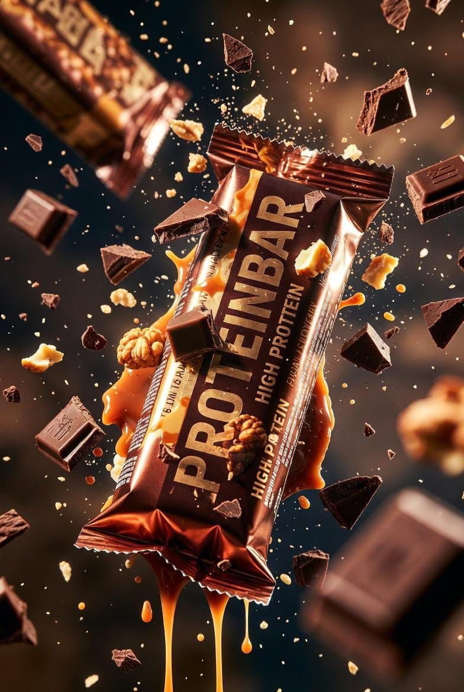
案例2016: Ultra cinematic product photography of a premium protein bar...
Ultra cinematic product photography of a premium protein bar wrapped in metallic packaging, floating at a dynamic ang...
🎨 查看AI提示词
🇨🇳 中文提示词
超电影质感的产品摄影：一条包裹在金属包装中的高端蛋白棒以动感角度悬浮；爆裂的巧克力块、焦糖滴和坚果碎片定格在半空；高速的飞溅与碎裂效果，戏剧化的工作室灯光伴随锐利高光；浓郁的棕色与金色配色，极致细腻的纹理，浅景深，照片级真实感，8K，健身奢华广告。
🇬🇧 English Prompt
Ultra-cinematic product photography of a premium protein bar wrapped in metallic packaging, floating at a dynamic angle; explosive chocolate chunks, caramel drips, and nut fragments frozen mid-air; hi...
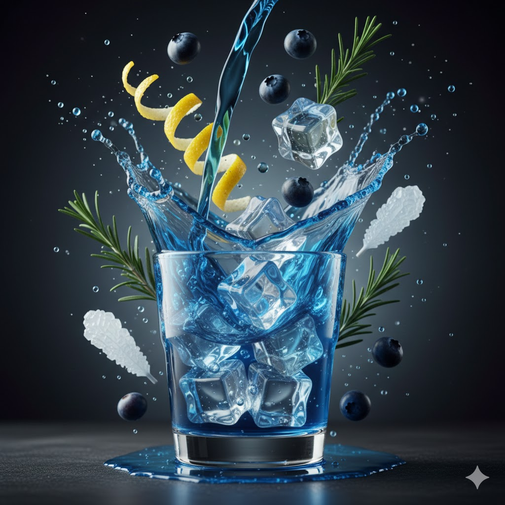
案例2015: Hyper realistic food photography, ultra high definition, dyna...
Hyper realistic food photography, ultra high definition, dynamic floating ingredients and liquids, ingredients suspen...
🎨 查看AI提示词
🇨🇳 中文提示词
超写实的美食摄影，超高清，动态悬浮的食材与液体，食材悬浮在半空中， 通过高速冻结捕捉运动，戏剧性的电影感工作室灯光，暗沉而情绪化的背景，带有微妙渐变，极致锐度与细腻纹理， 强对比突出食物、飞溅、碎屑、酱汁及液体在周围飞散，居中主体构图并留有充足的负空间， 干净奢华的广告风格，无文字、无标志、无道具， 真实的阴影与反射，极致细节，写实摄影，8K。 {一杯鸡尾酒的图片}
🇬🇧 English Prompt
Hyper-realistic food photography, ultra high-definition, dynamic floating ingredients and liquids, ingredients suspended in mid-air, motion captured in high-speed freeze, dramatic cinematic studio li...
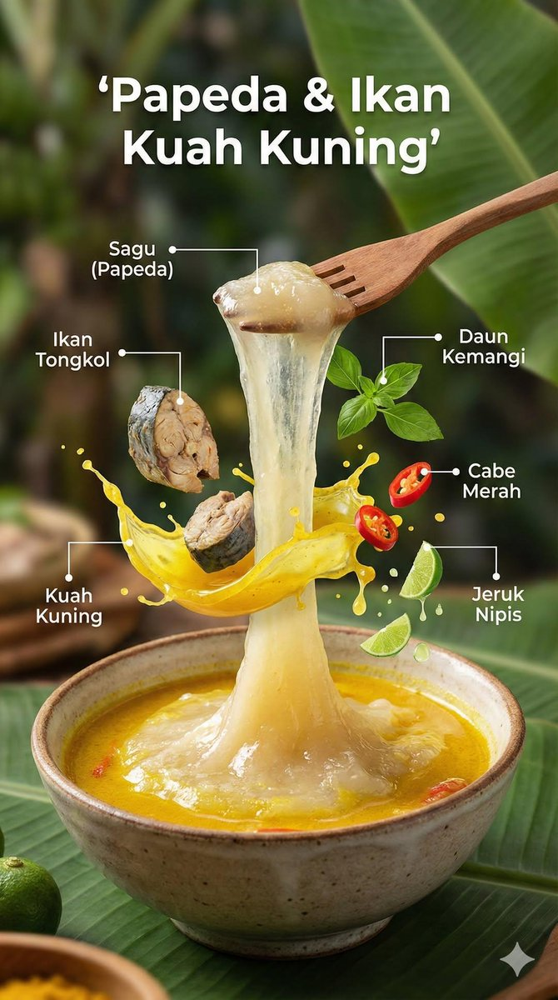
案例2009: Ultra realistic cinematic food photography of a traditional I...
Ultra realistic cinematic food photography of a traditional Indonesian dish, presented as a floating ingredients info...
🎨 查看AI提示词
🇨🇳 中文提示词
超写实、电影感的传统印尼菜肴食物摄影，以浮空食材信息图的形式呈现。成品菜位于底部，盛在陶瓷碗中，置于木质台面上。在其上方，关键食材悬浮于空中，呈简洁的垂直布局，每种食材清晰分隔、视觉上均衡。纤细极简的指示线将食材与优雅且易读的标签相连。自然纹理、超细节的食物表面、光亮的酱汁、缓缓上升的蒸汽，以及被冻结瞬间的高速飞溅效果。柔和的影棚灯光与自然日光混合、浅景深、顶级编辑级美食海报风格、商业广告级品质、...
🇬🇧 English Prompt
Ultra-realistic cinematic food photography of a traditional Indonesian dish, presented as a floating ingredients infographic. The finished dish sits at the bottom in a ceramic bowl on a wooden surface...
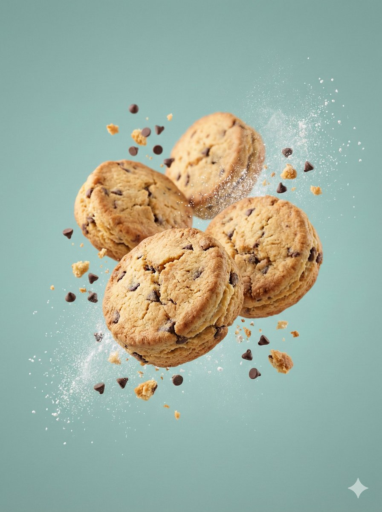
案例2007: "global settings": {
{ "global settings": { "resolution": "8K ultra high definition", "aspect ratio": "3:4 vertical", "render style": "pho...
🎨 查看AI提示词
🇨🇳 中文提示词
{ "全局设置": { "分辨率": "8K 超高清", "纵横比": "3:4 纵向", "渲染风格": "写实高端饼干摄影", "品质": "奢华广告标准", "清晰度": "超清且细腻纹理可见", "颗粒感": "无", "视觉伪影": "无", "景深": "选择性对焦，背景柔和虚化", "动态捕捉": "食材悬浮...
🇬🇧 English Prompt
{ "global_settings": { "resolution": "8K ultra-high-definition", "aspect_ratio": "3:4 vertical", "render_style": "photorealistic high-end biscuit photography", "quality": "luxury adv...
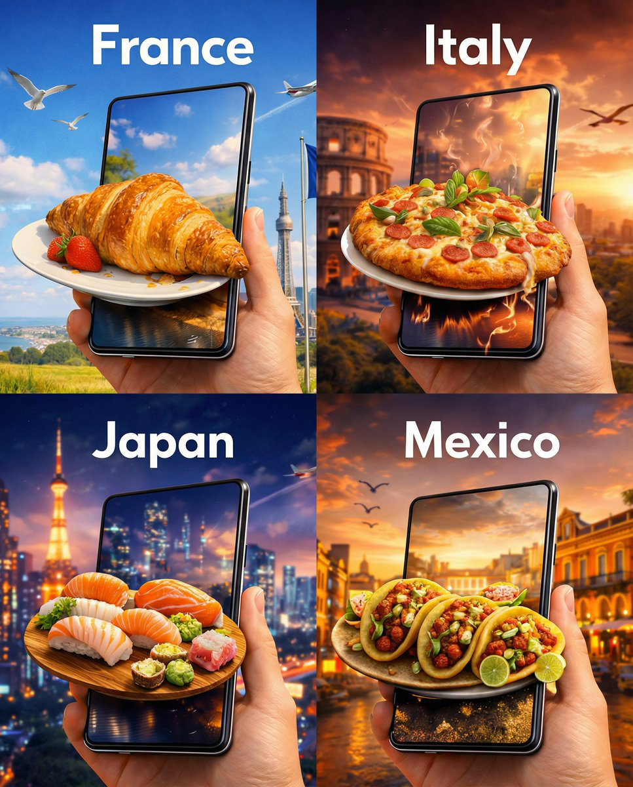
案例2003: "Create a hyper realistic tourism advertisement collage in a...
{ "Create a hyper realistic tourism advertisement collage in a single 1:1 image divided into a 2x2 grid. Each section...
🎨 查看AI提示词
🇨🇳 中文提示词
{ "创建一个超逼真的旅游广告拼贴图，在单张 1:1 图像中分为 2x2 网格。每个区块显示一只手以纵向握持一部时尚的超薄智能手机，略微倾斜以营造强烈的 3D 门户效果，标志性的民族美食从手机屏幕中延伸到现实世界。四个面板之间保持一致的手部、手机设计和光照风格。", "layout": { "type": "网格", "rows": 2, "columns": 2...
🇬🇧 English Prompt
{ "Create a hyper-realistic tourism advertisement collage in a single 1:1 image divided into a 2x2 grid. Each section shows a hand holding a sleek, ultra-thin smartphone in portrait orientation, sl...
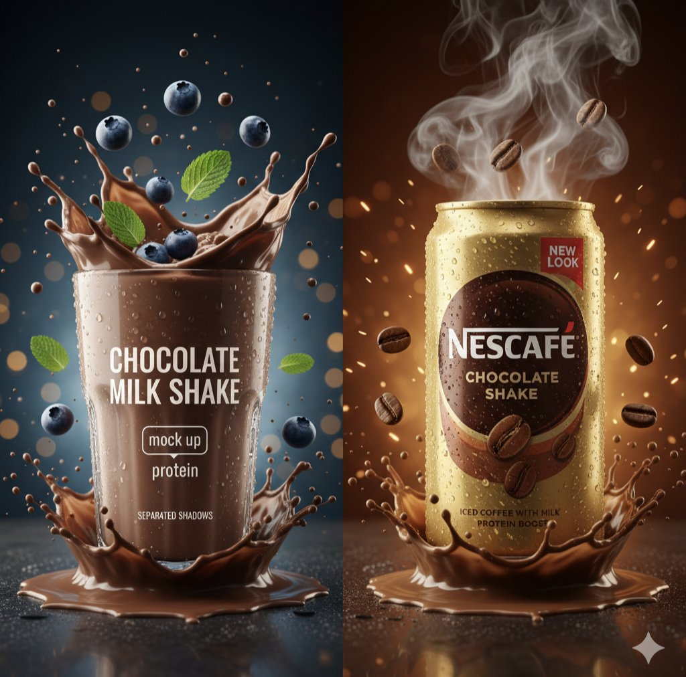
案例2000: "master prompt": {
{ "master prompt": { "global settings": { "style": "Hyper realistic commercial product photography", "layout": "Verti...
🎨 查看AI提示词
🇨🇳 中文提示词
{ "master_prompt": { "global_settings": { "style": "超写实商业产品摄影", "layout": "垂直分屏，两个独立模块", "resolution": "8K UHD，电影级照明", "details": "极致清晰、凝固的动态飞溅、微小冷凝水" }, "module_...
🇬🇧 English Prompt
{ "master_prompt": { "global_settings": { "style": "Hyper-realistic commercial product photography", "layout": "Vertical split-screen, two distinct modules", "resolution": "8K...
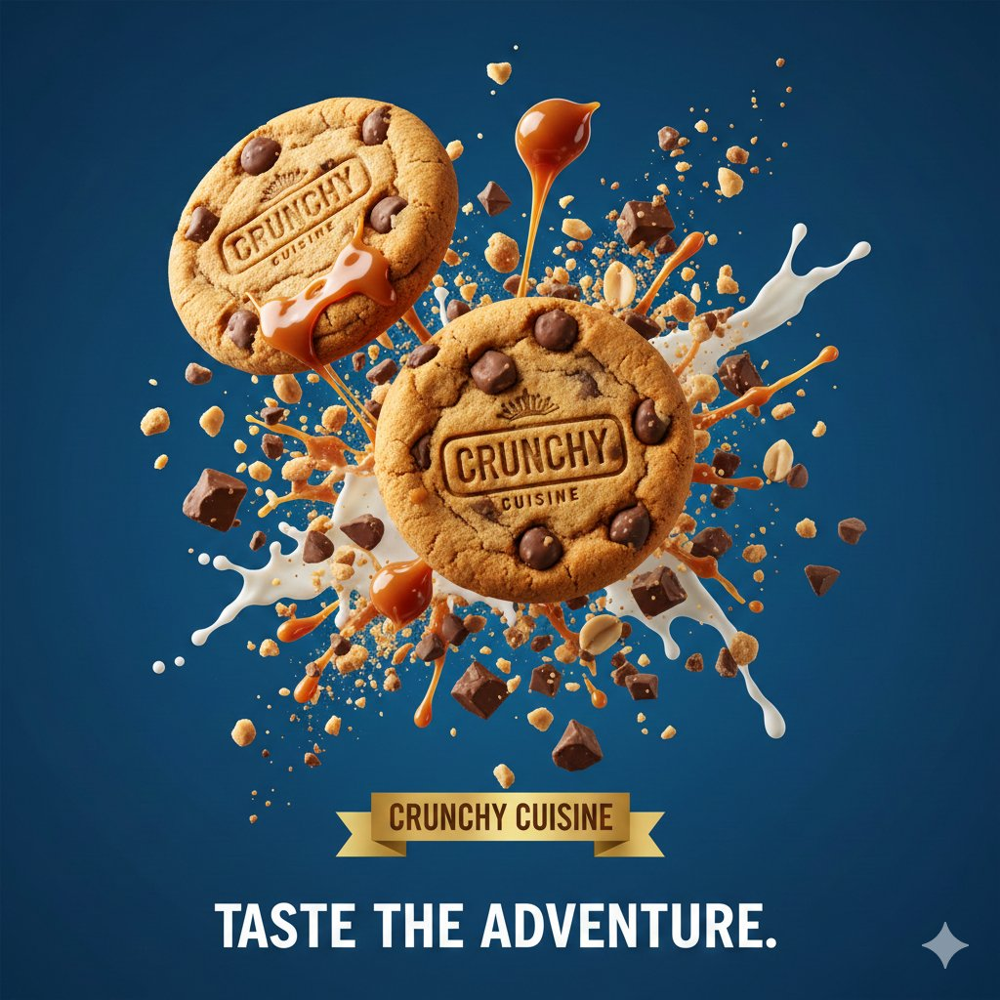
案例1995: "global settings": {
{ "global settings": { "resolution": "8K ultra high definition", "aspect ratio": "3:4 vertical", "render style": "hyp...
🎨 查看AI提示词
🇨🇳 中文提示词
{ "全局设置": { "分辨率": "8K 超高清", "长宽比": "3:4 纵向", "渲染风格": "超写实商业食品摄影", "质量": "高级广告级", "清晰度": "极致微观细节，边缘清晰", "噪点": "无", "伪影": "无", "景深": "浅景深，以主体为焦点", "运动": "空中冻结的食材",...
🇬🇧 English Prompt
{ "global_settings": { "resolution": "8K ultra-high-definition", "aspect_ratio": "3:4 vertical", "render_style": "hyper-realistic commercial food photography", "quality": "premium ad...
案例1994: "master prompt": {
{ "master prompt": { "global settings": { "resolution": "8K ultra high definition", "aspect ratio": "3:4 vertical", "...
🎨 查看AI提示词
🇨🇳 中文提示词
{ "master_prompt": { "global_settings": { "resolution": "8K 超高清", "aspect_ratio": "3:4 纵向", "style": "超写实 AI 编辑的商业饮料摄影", "sharpness": "极致清晰，微观细节可见", "lighting_quali...
🇬🇧 English Prompt
{ "master_prompt": { "global_settings": { "resolution": "8K ultra-high-definition", "aspect_ratio": "3:4 vertical", "style": "hyper-realistic AI-edited commercial beverage phot...
案例1993: "image prompt": {
{ "image prompt": { "type": "Hyper realistic editorial food infographic", "subject": { "cuisine": "Authentic Indian V...
🎨 查看AI提示词
🇨🇳 中文提示词
{ "image_prompt": { "type": "超写实社论风格美食信息图", "subject": { "cuisine": "地道印度素食", "base_element": "传统质朴的碗放在底部，盛着冒着蒸气的现煮咖喱，浓郁而芳香", "levitating_ingredients": [ "金黄酥脆的奶酪方块...
🇬🇧 English Prompt
{ "image_prompt": { "type": "Hyper-realistic editorial food infographic", "subject": { "cuisine": "Authentic Indian Vegetarian", "base_element": "Traditional rustic bowl filled w...
案例1984: Ultra realistic cinematic food photography of a traditional I...
Ultra realistic cinematic food photography of a traditional Indonesian dish, presented as a floating ingredients comp...
🎨 查看AI提示词
🇨🇳 中文提示词
超现实主义电影感的传统印尼菜肴美食摄影，以悬浮配料的组合呈现。主菜置于底部，放在质朴的陶碗中或香蕉叶碟上。关键配料悬浮在盘面上方，彼此清晰分离，并以干净极简的排版字体与细指示线标注。酱汁和香料的动态飞溅在瞬间被冻结，采用高速美食摄影。自然热带环境，香蕉叶、棕榈树、温暖的日光、浅景深。超细致的纹理、光泽的酱汁、蒸汽与烟雾效果、编辑风格的美食海报、高级商业品质、8K分辨率、柔和的电影感灯光、真实的阴影...
🇬🇧 English Prompt
Ultra-realistic cinematic food photography of a traditional Indonesian dish, presented as a floating ingredients composition. Main dish placed at the bottom in a rustic ceramic bowl or banana leaf pla...
案例1982: Ultra realistic smoothie explosion, banana slices, strawberry...
Ultra realistic smoothie explosion, banana slices, strawberry pieces, blueberry splash, chia seeds, liquid swirl froz...
🎨 查看AI提示词
🇨🇳 中文提示词
超写实的果昔爆裂，香蕉片，草莓块，蓝莓飞溅，奇亚籽，悬浮在空中的液体旋涡定格，明亮的摄影棚灯光，光泽液体质感，高端健康饮品广告风格，浅景深，超锐利，冻结的运动，电影级8K写实感 --ar 2:3 --v 6 --style raw
🇬🇧 English Prompt
Ultra-realistic smoothie explosion, banana slices, strawberry pieces, blueberry splash, chia seeds, liquid swirl frozen mid-air, bright studio lighting, glossy liquid texture, premium health drink ad ...
案例1978: The Cinematic Momo Duo
{ The Cinematic Momo Duo Subject & Scene Finished Dish: Freshly steamed dumplings (momos) stacked on a rustic wooden...
🎨 查看AI提示词
🇨🇳 中文提示词
{ 电影感莫莫二重奏 主体与场景 * 成品菜肴：刚蒸好的饺子（momos）堆放在一块质朴的木板上。 * 细节：光亮的面皮与精致手工褶皱，薄薄的油光，以及浓重戏剧性的蒸汽升起。 * 解构视图：并排或分割画面展示“解构”的momo。漂浮的饺子皮、调味碎肉馅球，和散落的新鲜香草。 动作与动态 * 定格瞬间：面粉颗粒悬浮在半空，动态定格的香料，以及戏剧性的慢动作飞溅效果。 * 氛围：缭绕旋转的蒸...
🇬🇧 English Prompt
{ The Cinematic Momo Duo Subject & Scene * Finished Dish: Freshly steamed dumplings (momos) stacked on a rustic wooden board. * The Details: Glossy dough with delicate handmade pleats, a light sheen...
案例1974: "master prompt": {
{ "master prompt": { "global settings": { "resolution": "8K ultra high definition", "aspect ratio": "3:4 vertical", "...
🎨 查看AI提示词
🇨🇳 中文提示词
{ "master_prompt": { "global_settings": { "resolution": "8K 超高清", "aspect_ratio": "3:4 纵向", "style": "超写实 AI 编辑的商业产品摄影", "sharpness": "极致清晰，微观细节可见", "lighting_quali...
🇬🇧 English Prompt
{ "master_prompt": { "global_settings": { "resolution": "8K ultra-high-definition", "aspect_ratio": "3:4 vertical", "style": "hyper-realistic AI-edited commercial product photo...
案例1960: "style": "Minimalist modern recipe infographic",
{ "style": "Minimalist modern recipe infographic", "visual aesthetic": { "photography style": "Top down / 3 quarter a...
🎨 查看AI提示词
🇨🇳 中文提示词
{ "style": "极简现代食谱信息图", "visual_aesthetic": { "photography_style": "俯拍 / 3/4 角度美食摄影", "design_language": "北欧风格，编辑类食谱排版", "background": "柔和中性米色 / 奶油色背景", "lighting": "柔和漫射光，伴有轻柔阴影",...
🇬🇧 English Prompt
{ "style": "Minimalist modern recipe infographic", "visual_aesthetic": { "photography_style": "Top-down / 3-quarter angle food photography", "design_language": "Scandinavian, editorial coo...
案例1936: Ultra cinematic vertical composition of coffee elements suspe...
Ultra cinematic vertical composition of coffee elements suspended in mid air cascading roasted coffee beans, chocolat...
🎨 查看AI提示词
🇨🇳 中文提示词
极具电影感的纵向构图：咖啡元素悬浮于空中，层叠的烘焙咖啡豆、巧克力糖果、空中咖啡杯中盘旋的拉花、凝固在瞬间的牛奶与浓缩咖啡飞溅，以及在空气中飘散的细咖啡粉，采用丰富的棕色与奶油色调呈现。 超细节质感，光滑的液体表面、咖啡油脂泡沫和哑光的咖啡豆纹理，配以戏剧性的高对比工作室灯光，置于深邃天鹅绒般的黑色背景前。电影感的景深、飞溅摄影美学、高端咖啡馆广告风格。以虚拟尼康 D850 拍摄，105mm ...
🇬🇧 English Prompt
Ultra-cinematic vertical composition of coffee elements suspended in mid-air cascading roasted coffee beans, chocolate bonbons, swirling latte art in a mid-air coffee cup, splashes of milk and espress...
案例1935: "image prompt": {
{ "image prompt": { "type": "Ultra realistic culinary infographic", "subject": { "cuisine": "Indonesian", "base eleme...
🎨 查看AI提示词
🇨🇳 中文提示词
{ "image_prompt": { "type": "极致真实的烹饪信息图", "subject": { "cuisine": "印尼风味", "base_element": "一个传统盛碗，盛着一碗热气腾腾的菜肴", "levitating_ingredients": [ "嫩滑的肉块", "金黄酥脆的豆...
🇬🇧 English Prompt
{ "image_prompt": { "type": "Ultra-realistic culinary infographic", "subject": { "cuisine": "Indonesian", "base_element": "A traditional serving bowl holding a steaming hot dish"...
案例1925: A hyper realistic {FRUIT} dessert burger, centered compositio...
A hyper realistic {FRUIT} dessert burger, centered composition, soft pastel {FRUIT COLOR} color palette. Fluffy {FRUI...
🎨 查看AI提示词
🇨🇳 中文提示词
超逼真的{FRUIT}甜点汉堡，居中构图，柔和的粉彩{FRUIT_COLOR}色调。蓬松的{FRUIT_COLOR}汉堡面包，表面为平滑哑光质感，顶部点缀少量芝麻。内部夹有新鲜切片的{FRUIT}层和轻盈的白色鲜奶油，带有光泽的{FRUIT}酱自然滴落。在汉堡周围漂浮的{FRUIT}切片和小花朵。简约的{FRUIT_COLOR}渐变背景，柔和的摄影棚灯光，奢华食品广告风格，极致干净，高细节，浅景深...
🇬🇧 English Prompt
A hyper-realistic {FRUIT} dessert burger, centered composition, soft pastel {FRUIT_COLOR} color palette. Fluffy {FRUIT_COLOR} burger buns with smooth matte texture and light sesame seeds on top. Layer...
案例1913: "image prompt": {
{ "image prompt": { "type": "Ultra realistic Indonesian traditional food infographic poster", "layout and composition...
🎨 查看AI提示词
🇨🇳 中文提示词
{ "image_prompt": { "type": "超逼真的印尼传统美食信息图海报", "layout_and_composition": { "orientation": "纵向构图", "style": "现代烹饪信息图设计，编辑式排版", "background": "戏剧性但干净的背景" }, "typograp...
🇬🇧 English Prompt
{ "image_prompt": { "type": "Ultra-realistic Indonesian traditional food infographic poster", "layout_and_composition": { "orientation": "Vertical composition", "style": "Modern ...
案例1902: A minimalist, ultra realistic product shot of a premium ice c...
A minimalist, ultra realistic product shot of a premium ice cream bar inspired by Kazakhstan. The popsicle is coated...
🎨 查看AI提示词
🇨🇳 中文提示词
极简主义、超写实的产品摄影，展示一款受哈萨克斯坦启发的高端冰淇淋棒。冰棒外层覆盖光亮的绿松石色糖霜，饰有精致的金色装饰纹样，并以金属金色压印“QAZAQSTAN”字样，饰有金色的太阳与鹰图案。下半部露出奶油般的香草冰淇淋，质地顺滑，带有细微的融化滴落。木制棒刻有传统哈萨克花纹。洁白的影棚背景、柔和漫射光、清晰对焦、奢华食品品牌美学、高细节纹理、现代文化融合设计、8K 画质。
🇬🇧 English Prompt
A minimalist, ultra-realistic product shot of a premium ice cream bar inspired by Kazakhstan. The popsicle is coated in glossy turquoise icing with elegant gold ornamental patterns and the word “QAZAQ...
案例1901: A hyper realistic Indonesian food infographic poster with dra...
A hyper realistic Indonesian food infographic poster with dramatic floating ingredients. Vertical composition, bold t...
🎨 查看AI提示词
🇨🇳 中文提示词
一幅超写实的印尼美食信息图海报，具有戏剧性的悬浮食材。垂直构图，顶部醒目的粗体标题文字显示菜名和产地（ASAL）。食材在空中悬浮，配有干净的白色标签线和印尼语文字。电影感美食摄影风格，超细节纹理、光泽酱汁、焦香肉类、新鲜蔬菜、蒸汽与烟雾效果。强烈对比的光线、编辑式版面、现代排版、专业美食杂志外观、凝固的飞溅瞬间、逼真的阴影、影棚灯光、浅景深、8K 超逼真、单反相机画质。
🇬🇧 English Prompt
A hyper-realistic Indonesian food infographic poster with dramatic floating ingredients. Vertical composition, bold title text at the top showing the dish name and origin (ASAL). Ingredients levitatin...
案例1891: an eye catching photograph of [food category or specific dish...
an eye catching photograph of [food category or specific dish], [such as specific ingredients or elements, arranged i...
🎨 查看AI提示词
🇨🇳 中文提示词
一张引人注目的照片，拍摄对象为 [食品类别或具体菜肴]， [例如具体食材或元素，按（竖直）堆叠排列]，背景为 [纯色]。突出独特的质感、层次和自然细节，使它们在纯色背景上更加突出。精细的细节、自然之美与新鲜感，干净的构图，专为展示或宣传材料设计。
🇬🇧 English Prompt
an eye-catching photograph of [food category or specific dish], [such as specific ingredients or elements, arranged in a (vertical) stack] on a [solid color] background. highlight the unique texture...
案例1882: Ultra luxury food commercial of a stack of thick, fluffy Amer...
Ultra luxury food commercial of a stack of thick, fluffy American pancakes with perfectly golden brown edges. Pure ma...
🎨 查看AI提示词
🇨🇳 中文提示词
超奢华食品广告：一叠厚实、松软的美式煎饼，边缘完美呈金褐色。纯枫糖浆以光泽的慢动作水流缓缓沿侧面倾泻，突出每一滴。煎饼顶部装饰着新鲜混合浆果（蓝莓、覆盆子、黑莓）、散落的烘烤榛子和杏仁，以及酥脆的燕麦片。电影般的特写镜头，充满温暖的早晨光线，柔和米色的散景背景，超细节纹理强调松软与光泽。奢华的金色雕花勺子轻轻取下一口，枫糖浆真实地拉丝延展。镜头平滑环绕并略微俯视煎饼，突出优雅与纵情享受。极简高端摆...
🇬🇧 English Prompt
Ultra-luxury food commercial of a stack of thick, fluffy American pancakes with perfectly golden-brown edges. Pure maple syrup cascades slowly down the sides in glossy, slow-motion streams, highlighti...
案例1878: "image prompt": {
{ "image prompt": { "type": "Hyper realistic food infographic", "subject": { "cuisine": "Indonesian", "base element":...
🎨 查看AI提示词
🇨🇳 中文提示词
{ "image_prompt": { "type": "超写实食物信息图", "subject": { "cuisine": "印度尼西亚菜", "base_element": "传统碗，底部盛着热气腾腾的菜肴", "levitating_ingredients": [ "多汁的肉", "酥脆的豆腐", ...
🇬🇧 English Prompt
{ "image_prompt": { "type": "Hyper-realistic food infographic", "subject": { "cuisine": "Indonesian", "base_element": "Traditional bowl with steaming hot dish at the bottom", ...
案例1863: Create a branded technical infographic of a [SNACK], combinin...
Create a branded technical infographic of a [SNACK], combining a realistic photograph or photoreal render of the prod...
🎨 查看AI提示词
🇨🇳 中文提示词
为 [SNACK] 创建品牌化的技术信息图，将产品的真实照片或写实渲染与直接覆盖其上的技术注释叠加结合。 在纯白影棚背景上，使用黑色墨线风格的线描，并辅以策略性的 [BRAND COLOR] 点缀（建筑手稿风格），包括： • 关键组件标注 • 内部剖面，展示结构、层次或内部设计 • 测量、尺寸与规格 • 材料注记，包括成分与用量 • 箭头指示主要功能与结构完整性 • 简单示意图或截面图，展示关键机...
🇬🇧 English Prompt
Create a branded technical infographic of a [SNACK], combining a realistic photograph or photoreal render of the product with technical annotation overlays placed directly on top. Use black ink–style ...
案例1855: "image type": "high detail food photography, AI edited surrea...
{ "image type": "high detail food photography, AI edited surreal composition", "resolution": "8K ultra high definitio...
🎨 查看AI提示词
🇨🇳 中文提示词
{ "image_type": "高细节食品摄影，AI 编辑的超现实构图", "resolution": "8K 超高清", "aspect_ratio": "3:4", "main_subject": { "object": "单块立方体状红丝绒蛋糕", "position": "悬浮在半空中", "orientation": "略微倾斜，正面可见，顶部糖...
🇬🇧 English Prompt
{ "image_type": "high-detail food photography, AI-edited surreal composition", "resolution": "8K ultra-high-definition", "aspect_ratio": "3:4", "main_subject": { "object": "single cube-sha...
案例1830: "global settings": {
{ "global settings": { "resolution": "8K ultra high definition", "aspect ratio": "2:3 vertical", "style": "hyper real...
🎨 查看AI提示词
🇨🇳 中文提示词
{ "全局设置": { "分辨率": "8K 超高清", "纵横比": "2:3（纵向）", "风格": "超写实的 AI 编辑美食摄影", "清晰度": "极致锐度，微观纹理可见", "动态": "冻结动作，食材悬浮", "灯光质量": "工作室级、高对比、电影感", "背景分离": "强烈的主体分离与干净的景深" }, "模...
🇬🇧 English Prompt
{ "global_settings": { "resolution": "8K ultra high definition", "aspect_ratio": "2:3 vertical", "style": "hyper-realistic AI-edited food photography", "clarity": "extreme sharpness,...
案例1806: "master prompt": {
{ "master prompt": { "global settings": { "resolution": "8K", "aspect ratio": "3:4", "render style": "hyper realistic...
🎨 查看AI提示词
🇨🇳 中文提示词
{ "主提示": { "全局设置": { "分辨率": "8K", "长宽比": "3:4", "渲染风格": "超真实 AI 生成的美食摄影", "聚焦": "极致细节、清晰纹理、动态动作、电影级灯光", "景深": "浅景深，前景对焦", "噪点": "无", "伪影": "无" }, ...
🇬🇧 English Prompt
{ "master_prompt": { "global_settings": { "resolution": "8K", "aspect_ratio": "3:4", "render_style": "hyper-realistic AI-generated food photography", "focus": "extreme de...
案例1804: A hyper realistic image of a sliced kiwi splashing in a spray...
A hyper realistic image of a sliced kiwi splashing in a spray of water with droplets suspended in the air. Fresh kiwi...
🎨 查看AI提示词
🇨🇳 中文提示词
超写实的图像：切片猕猴桃在水花中飞溅，水滴悬浮在空中。新鲜的猕猴桃切片以动感排列在悬浮的构图中，营造出平滑的绿色背景。平滑的绿色渐变带来清新、明亮、多汁的美感。工作室照明、柔和阴影、高细节、物体微距摄影，强调质感与反射。超逼真渲染、8K、清晰对焦、丰富的绿色调。 --ar 9:16 --raw
🇬🇧 English Prompt
A hyper-realistic image of a sliced kiwi splashing in a spray of water with droplets suspended in the air. Fresh kiwi slices, dynamically arranged in a floating composition, create a smooth green back...
案例1801: Ultra clean modern recipe infographic. Showcase chowmin in a...
Ultra clean modern recipe infographic. Showcase chowmin in a visually appealing finished form sliced, plated, or port...
🎨 查看AI提示词
🇨🇳 中文提示词
超简洁现代食谱信息图。展示炒面成品的视觉效果，可为切片、装盘或分份，略微悬浮并呈现透视或倾斜视角。将食材、步骤和小贴士以动态的编辑式布局环绕菜品排列，不局限于俯视布局。 食材部分：为每种食材配上图标或迷你插图并标注用量。可将它们以群组、列表或环形流动排列，并在视觉上与菜品相连。 步骤部分：用编号面板、箭头或连线展示准备步骤，围绕主菜形成逻辑流程。必要时加入小型烹饪图标（刀、锅、烤箱、计时器）。...
🇬🇧 English Prompt
Ultra-clean modern recipe infographic. Showcase chowmin in a visually appealing finished form sliced, plated, or portioned floating slightly in perspective or angled view. Arrange ingredients, steps, ...
案例1796: Ultra clean modern recipe infographic.
Ultra clean modern recipe infographic. Showcase [FOOD] in a visually appealing finished form—sliced, plated, or porti...
🎨 查看AI提示词
🇨🇳 中文提示词
超简洁现代食谱信息图。 以视觉吸引的成品形式展示 [FOOD] — 切片、装盘或分份 — 略带透视或倾斜视角悬浮展示。 在菜品周围以动态的编辑式布局排列配料、步骤和提示，不局限于俯视布局。 配料部分： 为每种配料配上图标或小插图并标注用量。可将它们以簇状、列表或环形流程排列，并在视觉上与菜品相连接。 步骤部分： 用编号面板、箭头或引导线展示准备步骤，在主菜周围形成逻辑流程。必要时加入小型烹...
🇬🇧 English Prompt
Ultra-clean modern recipe infographic. Showcase [FOOD] in a visually appealing finished form—sliced, plated, or portioned—floating slightly in perspective or angled view. Arrange ingredients, steps,...
案例1793: "image prompt": {
{ "image prompt": { "viewpoint": "Realistic first person view (FPV)", "action": "Person holding fresh fruit in their...
🎨 查看AI提示词
🇨🇳 中文提示词
{ "image_prompt": { "viewpoint": "逼真的第一人称视角（FPV）", "action": "人物双手捧着新鲜水果", "subject_variations": [ "香蕉", "草莓", "苹果" ], "environment": { "location": "现代超市过...
🇬🇧 English Prompt
{ "image_prompt": { "viewpoint": "Realistic first-person view (FPV)", "action": "Person holding fresh fruit in their hands", "subject_variations": [ "Banana", "Strawberries",...
案例1781: "presentation": "Deconstructed exploded view floating in mid...
{ "presentation": "Deconstructed exploded view floating in mid air above a finished burger on a plate", "burger paddy...
🎨 查看AI提示词
🇨🇳 中文提示词
{ "展示": "解构的炸开视图在半空中漂浮，位于盘子上完整汉堡的上方", "汉堡饼": "烤藜麦和黑豆饼，带明显烤焦痕迹，对半切开，蒸汽升腾", "漂浮食材": [ "熟藜麦颗粒", "整颗黑豆", "烤红薯丁", "新鲜菠菜和芝麻菜叶", "成熟牛油果切片", "奶油质地的芝麻酱柠檬调味汁滴落", ...
🇬🇧 English Prompt
{ "presentation": "Deconstructed exploded view floating in mid-air above a finished burger on a plate", "burger_paddy": "Grilled quinoa and black bean patty with visible char marks, split in half ...
案例1756: Ultra realistic food photography of a prepared creamy white s...
Ultra realistic food photography of a prepared creamy white sauce penne pasta served in a minimal ceramic bowl. Perfe...
🎨 查看AI提示词
🇨🇳 中文提示词
超现实逼真的食品摄影，拍摄一份搭配浓郁白酱的笔管面，盛放在极简风格的陶瓷碗中。笔管面煮至恰到好处，均匀裹覆在浓郁、光泽的奶油酱中，表面撒有新鲜擦碎的帕玛森奶酪和细碎的绿香草。干净的白色工作室背景、柔和的漫射光、碗下方的柔和阴影、酱汁上的自然高光、真实的质感和厚度。居中构图、浅景深、高级餐厅风格的呈现、高细节的食品造型、8K画质、锐利对焦、无文字、无标签、无手部、无道具、无水印。
🇬🇧 English Prompt
Ultra-realistic food photography of a prepared creamy white sauce penne pasta served in a minimal ceramic bowl. Perfectly cooked penne coated evenly in rich, glossy cream sauce, topped with freshly gr...
案例1753: "image prompt": {
{ "image prompt": { "main concept": "High end commercial food photography with a floating composition (food levitatio...
🎨 查看AI提示词
🇨🇳 中文提示词
{ "image_prompt": { "main_concept": "高端商业美食摄影，采用悬浮构图（食物悬浮效果）。", "composition": { "arrangement": "主打食物悬浮于空中，配料环绕呈完美平衡", "background": "纯白背景", "shadows": "悬浮食物下方有柔和阴影" },...
🇬🇧 English Prompt
{ "image_prompt": { "main_concept": "High-end commercial food photography with a floating composition (food levitation effect).", "composition": { "arrangement": "Hero food item suspen...
案例1744: "master prompt": {
{ "master prompt": { "global settings": { "resolution": "8K ultra high definition", "aspect ratio": "3:4 vertical", "...
🎨 查看AI提示词
🇨🇳 中文提示词
{ "主提示": { "全局设置": { "分辨率": "8K 超高清", "纵横比": "3:4 纵向", "图像质量": "极致清晰度，高动态范围，专业影棚灯光", "风格": "AI 编辑的超写实美食摄影", "焦点": "清晰纹理，冻结运动，液体动态，表面细节", "背景质量": "干净、可控、无噪点" }, "模块_1": { "标识": "图像 1 – 带紫色飞溅的冰淇淋蛋筒...
🇬🇧 English Prompt
{ "master_prompt": { "global_settings": { "resolution": "8K ultra high definition", "aspect_ratio": "3:4 vertical", "image_quality": "extreme sharpness, high dynamic range, professional studio lightin...
案例1730: Advertising style food photography of a stack of pancakes arr...
Advertising style food photography of a stack of pancakes arranged on a rustic table, with maple syrup droplets float...
🎨 查看AI提示词
🇨🇳 中文提示词
广告风格的美食摄影，展示一叠煎饼，摆放在质朴的桌子上，枫糖浆滴落在半空中漂浮，且糖浆的泼洒被定格在动态画面中。高分辨率的照片后期处理，具备选择性柔焦、用于文本的干净负空间、戏剧性的照明以及清晰的细节。 --ar 3:2 --v 7
🇬🇧 English Prompt
Advertising-style food photography of a stack of pancakes arranged on a rustic table, with maple syrup droplets floating above in mid-air and a splash of syrup frozen in motion. High-resolution photo ...
案例1707: Create an infographic image of [FOOD], combining a realistic...
Create an infographic image of [FOOD], combining a realistic photograph or photoreal render of the object with techni...
🎨 查看AI提示词
🇨🇳 中文提示词
为 [FOOD] 创建信息图像，将对象的真实照片或写实渲染与直接覆盖在上方的技术注释叠加在一起。 使用黑色墨水风格的线条绘图和文本（技术笔/建筑草图风格）在纯白色工作室背景上，包括： •关键组件标签 •内部剖切图或爆炸视图轮廓 •测量、尺寸与比例标记 •材料说明及数量 •指示功能、力或流动的箭头（空气、声音、功率、压力） •在相关情况下的简单示意图或剖面图 在一个角落，将标题“FOOD”放置在...
🇬🇧 English Prompt
Create an infographic image of [FOOD], combining a realistic photograph or photoreal render of the object with technical annotation overlays placed directly on top. Use black ink–style line drawings ...
案例1692: Use uploaded photo as absolute main reference. Preserve Sebla...
Use uploaded photo as absolute main reference. Preserve Seblak kuah identity, ingredients, textures, and proportions;...
🎨 查看AI提示词
🇨🇳 中文提示词
以上传的照片作为绝对主要参考。保留 Seblak kuah 的身份、配料、质地和比例；不要添加照片中没有的任何东西。 完整的陶瓷碗以平滑旋转的扭动运动上升；轻微受控的倾斜，保持稳定支撑点。 仅破坏食物部分：脆饼/kerupuk 撕裂并裂开，露出气泡状多孔质地；配料（如参考所示）自然分离；辛辣汤汁拉伸
🇬🇧 English Prompt
Use uploaded photo as absolute main reference. Preserve Seblak kuah identity, ingredients, textures, and proportions; do not add anything not present. Intact ceramic bowl rises in a smooth swirling tw...
案例1687: Generate a '2:3' hyper realistic, high resolution poster feat...
Generate a '2:3' hyper realistic, high resolution poster featuring the attached taco image. Adjust its perspective if...
🎨 查看AI提示词
🇨🇳 中文提示词
生成一个“2:3”的超写实、高分辨率海报，使用附带的塔可（taco）图像。如有必要，调整其透视以匹配场景透视并自然融入构图。 构图: 捕捉一个动态定格瞬间：街边接传时塔可在翻转中，采用荷兰式倾斜的低位三分之四视角来夸张运动感和紧迫感。相机位置略低于塔可，向上仰角拍摄，塔可大而占主导，正中央位置，画面中锐利对焦，悬浮在带划痕的不锈钢街边摊台面正上方。左上方顶部安装的一盏刺眼路灯投射出集中的锥形暖光...
🇬🇧 English Prompt
Generate a '2:3' hyper-realistic, high-resolution poster featuring the attached taco image. Adjust its perspective if needed to match the scene’s perspective and blend naturally into the composition. ...
案例1671: "global settings": {
{ "global settings": { "resolution": "8K ultra high definition", "aspect ratio": "3:4", "camera style": "studio food...
🎨 查看AI提示词
🇨🇳 中文提示词
{ "global_settings": { "resolution": "8K 超高清", "aspect_ratio": "3:4", "camera_style": "电影感灯光的工作室美食摄影", "depth_of_field": "浅景深，主体清晰，背景柔和", "lighting": "柔和定向主光、细腻轮廓光、可控高光", "style": "带编辑信息图覆盖的超写实食物插画", ...
🇬🇧 English Prompt
{ "global_settings": { "resolution": "8K ultra high definition", "aspect_ratio": "3:4", "camera_style": "studio food photography with cinematic lighting", "depth_of_field": "shallow depth of field, sh...
案例1649: Ultra premium cinematic food photography, 8K UHD, 3:4 aspect...
Ultra premium cinematic food photography, 8K UHD, 3:4 aspect ratio. A high end studio composition featuring a single...
🎨 查看AI提示词
🇨🇳 中文提示词
超高端电影质感美食摄影，8K UHD，3:4 纵横比。 高端影棚构图，以一个单独漂浮的碗为主角，在高速瞬间捕捉，配料悬浮于空中。画面传达出受控的能量感、新鲜感与纵情感。 光线柔和、有方向性且具影棚级，塑造质感，呈现干净的高光与自然的阴影。景深为浅到中等，突出主体的同时保持立体真实感。 色彩饱满却自然，对比平衡、饱和度精致。不使用人工光晕或夸张效果。 背景为无缝纯色或平滑渐变，经过精心挑选以衬托食材...
🇬🇧 English Prompt
Ultra-premium cinematic food photography, 8K UHD, 3:4 aspect ratio. A high-end studio composition featuring a single floating bowl as the hero subject, captured in a high-speed moment with ingredients...
案例1632: "subject": {
{ "subject": { "primary": "Vibrant orange slices", "action": "Falling through the air toward rising milk", "secondary...
🎨 查看AI提示词
🇨🇳 中文提示词
{ "subject": { "primary": "鲜艳的橙子片", "action": "穿过空中，朝着上升的牛奶下落", "secondary": "浓稠光亮的白色牛奶飞溅，形成弧线和冠状曲线", "details": "牛奶液滴在空中凝固，呈奶油质感" }, "environment": { "background": "干净的蓝色影棚背...
🇬🇧 English Prompt
{ "subject": { "primary": "Vibrant orange slices", "action": "Falling through the air toward rising milk", "secondary": "Thick, glossy white milk splash forming arcs and crown-like curves"...
案例1631: Dynamic flavor wave composition of [FOOD], with colorful ener...
Dynamic flavor wave composition of [FOOD], with colorful energy ribbons, mist, and motion streaks bursting outward to...
🎨 查看AI提示词
🇨🇳 中文提示词
以[FOOD]为主体的动态风味波浪构图，伴随彩色能量丝带、薄雾和向外爆发的运动光迹，以表现味道强度。食材剪影嵌入波浪之中。干净简约的白色背景，高调棚拍灯光。超真实质感、电影级运动模糊、顶级商业美食摄影，8K 分辨率。
🇬🇧 English Prompt
Dynamic flavor wave composition of [FOOD], with colorful energy ribbons, mist, and motion streaks bursting outward to represent taste intensity. Ingredient silhouettes embedded within the waves. Clean...
案例1623: Use the uploaded product image as reference. Create an ultra...
Use the uploaded product image as reference. Create an ultra realistic commercial image of a Garoto chocolate bar. Sh...
🎨 查看AI提示词
🇨🇳 中文提示词
使用上传的产品图片作为参考。创建一张 Garoto 巧克力棒的超真实广告图像。展示一块断裂的巧克力棒，具有融化的巧克力质感、可清晰看到的可可细节和丰富的光泽。添加细腻的巧克力飞溅和飘浮的碎屑。清洁的工作室布景、鲜艳多彩的背景、面向社交媒体的大胆广告风格。8K 超真实、高锐度、高对比度、专业照明，写实的阴影与高光；不含文字、无水印、无模糊、无失真、无低质量、无卡通风格。
🇬🇧 English Prompt
Use the uploaded product image as reference. Create an ultra-realistic commercial image of a Garoto chocolate bar. Show a broken bar with melted chocolate texture, visible cocoa details and rich gloss...
案例1609: Professional studio food photography series featuring deconst...
Professional studio food photography series featuring deconstructed dishes in high speed levitation. Against a seamle...
🎨 查看AI提示词
🇨🇳 中文提示词
专业影棚美食摄影系列，展示解构菜肴的高速悬浮。以无缝的灰粉色背景和柔和漫射的影棚灯光为衬，食材在空中漂浮并动态爆裂。题材包括悬浮的提拉米苏组成层（意式冰淇淋、手指饼干、马斯卡彭、咖啡豆）、悬于木板上陶瓷汤碗上方的罗宋汤食材（甜菜、黑麦面包、香草）、以及在半空中分离的酸种面包烤片配捣碎牛油果和流心荷包蛋。以清晰对焦和浅景深捕捉飞扬的面包屑、香料颗粒、香草和液滴等细微细节。主要悬浮元素下方投射出柔和的...
🇬🇧 English Prompt
Professional studio food photography series featuring deconstructed dishes in high-speed levitation. Against a seamless dusty pink background with soft, diffused studio lighting, ingredients float and...
案例1586: “Luxury golden hour styled hero shot of [FOOD] bathed in warm...
“Luxury golden hour styled hero shot of [FOOD] bathed in warm directional sunlight. Long soft shadows, glowing highli...
🎨 查看AI提示词
🇨🇳 中文提示词
“以[FOOD]为主角的黄金时刻风格主图，沐浴在暖色定向阳光下。长而柔和的阴影、发光的高光、自然的镜头光晕。简约白色布景，带有细腻纹理。编辑式生活方式美食摄影美学，丰富的色彩深度、氛围感的温暖、超逼真的细节、顶级广告品质、8K 分辨率。”
🇬🇧 English Prompt
“Luxury golden-hour styled hero shot of [FOOD] bathed in warm directional sunlight. Long soft shadows, glowing highlights, natural lens flares. Minimal white set with subtle texture. Editorial lifesty...
案例1581: Ultra clean modern recipe infographic. Showcase [FOOD] in a v...
Ultra clean modern recipe infographic. Showcase [FOOD] in a visually appealing finished form—sliced, plated, or porti...
🎨 查看AI提示词
🇨🇳 中文提示词
超干净现代风格的食谱信息图。展示[FOOD]的吸睛成品形态——切片、装盘或分份——以略带透视或倾斜角度悬浮呈现。将食材、步骤和小贴士以动态编辑式布局环绕菜品排列，不局限于俯视布局。 食材部分：为每种食材配上图标或小插图并标注用量。可将它们以簇状、列表或环形流线排列，并在视觉上与菜品相连。 步骤部分：用编号面板、箭头或线条展示制备步骤，在主菜周围形成逻辑流程。必要时加入小型烹饪图标（刀、锅、烤箱...
🇬🇧 English Prompt
Ultra-clean modern recipe infographic. Showcase [FOOD] in a visually appealing finished form—sliced, plated, or portioned—floating slightly in perspective or angled view. Arrange ingredients, steps, a...
案例1579: Create a luxury fashion editorial still life of a sharp trian...
Create a luxury fashion editorial still life of a sharp triangular prism cake slice made of hard crystal clear glass...
🎨 查看AI提示词
🇨🇳 中文提示词
创作一幅奢华时尚编辑级静物：一片锐利的三棱锥形蛋糕切片，由坚硬、晶莹剔透的玻璃状材质构成，主打果实为[橙子]，采用单一统一的糖果玻璃色调，同时保留果实的原始自然色相和形体逻辑；明确排除对果梗和叶子的重新着色，使其保留自然的绿色。透明的玻璃蛋糕具有抛光边缘、优雅的折射、清晰的高光和与实体水晶相同的内部反射；蛋糕内部厚实饱满的无籽果实横截面呈现为纯净透明的玻璃，表面完美光滑无缝。一整个以镜面抛光半透明...
🇬🇧 English Prompt
Create a luxury fashion-editorial still life of a sharp triangular prism cake slice made of hard crystal-clear glass-like material, with the featured fruit being [orange], using a single unified candy...
案例1572: Ultra clean modern recipe infographic. Showcase briyani in a...
Ultra clean modern recipe infographic. Showcase briyani in a visually appealing finished form—sliced, plated, or port...
🎨 查看AI提示词
🇨🇳 中文提示词
超简洁现代食谱信息图。以视觉吸引的成品形式展示briyani——切片、摆盘或分份——稍微悬浮并带有透视或倾斜视角。以动态的编辑式布局在菜肴周围排列食材、步骤和小贴士，不局限于俯视视角。 食材部分：为每种食材添加图标或小插画并标明用量。可将它们以簇状、列表或环状流线排列，并在视觉上与菜肴连接。 步骤部分：用编号面板、箭头或连线展示准备/烹饪步骤，在主菜周围形成逻辑流程。必要时加入小型烹饪图标（刀...
🇬🇧 English Prompt
Ultra-clean modern recipe infographic. Showcase briyani in a visually appealing finished form—sliced, plated, or portioned—floating slightly in perspective or angled view. Arrange ingredients, steps, ...
案例1540: Ultra realistic prepared pepperoni pizza slice, fully assembl...
Ultra realistic prepared pepperoni pizza slice, fully assembled, gooey melted mozzarella cheese stretching and drippi...
🎨 查看AI提示词
🇨🇳 中文提示词
- 超真实的已完全组装好的意大利辣香肠披萨片，黏稠的融化莫扎里拉奶酪从边缘拉伸并滴落，上方表面铺着酥脆的意大利辣香肠片，底部是浓郁的番茄酱，厚厚的金黄烤饼皮，新鲜罗勒叶和淡淡的调味料若隐若现地漂浮在上方，干净纯白的背景，专业商业食品摄影灯光，披萨片下方的柔和自然阴影，清晰聚焦，极致的纹理细节，光泽的奶酪，酥脆的饼皮表面，工作室拍摄，极简构图，无文字，无标签，无手部出镜，高端食品广告风格，8K分辨率...
🇬🇧 English Prompt
- Ultra-realistic prepared pepperoni pizza slice, fully assembled, gooey melted mozzarella cheese stretching and dripping over the edges, crispy pepperoni slices on top, rich tomato sauce beneath, thi...
案例1521: A cinematic, ultra realistic advertising shot of a man holdin...
A cinematic, ultra realistic advertising shot of a man holding a Lay’s [FLAVOR NAME] chips packet in his hand. The pa...
🎨 查看AI提示词
🇨🇳 中文提示词
一张电影感、超写实的广告镜头，展示一名男子手中握着一包 Lay’s [口味名称] 薯片。 包装袋的颜色、品牌标识和字体与 Lay’s 官方设计完全一致。 男子的服装颜色、质地和风格与包装主题相匹配（相同的色彩搭配和氛围），现代时尚，具有高级时装感。 他的姿势自信自然，手清晰地握住前景中的 Lay’s 包装袋。 背景环境与口味主题相呼应 香料、食材、氛围和灯光均受口味启发（例如：马萨拉为炽热香料，...
🇬🇧 English Prompt
A cinematic, ultra-realistic advertising shot of a man holding a Lay’s [FLAVOR NAME] chips packet in his hand. The packet color, branding, and typography are perfectly accurate to Lay’s official desig...
案例1481: "global settings": {
{ "global settings": { "resolution": "8K", "quality": "ultra high", "render style": "hyperrealistic commercial CGI",...
🎨 查看AI提示词
🇨🇳 中文提示词
{ "global_settings": { "resolution": "8K", "quality": "超高", "render_style": "超写实商业CGI", "lighting": "工作室级，高对比，光泽高光", "focus": "极致清晰，宏观级纹理可见", "color_depth": "丰富、饱和、干净的渐变", ...
🇬🇧 English Prompt
{ "global_settings": { "resolution": "8K", "quality": "ultra-high", "render_style": "hyperrealistic commercial CGI", "lighting": "studio-grade, high-contrast, glossy highlights", ...
案例1471: "composition": {
{ "composition": { "orientation": "vertical", "style": "ultra cinematic", "scene type": "mid air suspended elements",...
🎨 查看AI提示词
🇨🇳 中文提示词
{ "composition": { "orientation": "垂直", "style": "超电影感", "scene_type": "空中悬浮元素", "depth_of_field": "电影级浅景深" }, "subject": { "main_elements": [ "倾泻的烘焙咖啡豆", "悬浮的巧克力...
🇬🇧 English Prompt
{ "composition": { "orientation": "vertical", "style": "ultra-cinematic", "scene_type": "mid-air suspended elements", "depth_of_field": "cinematic shallow depth" }, "subject": { ...
案例1465: [subject], premium food advertising, white seamless backgroun...
[subject], premium food advertising, white seamless background, high key studio lighting, floating stacked compositio...
🎨 查看AI提示词
🇨🇳 中文提示词
[subject]，高端食品广告，白色无缝背景，高调工作室灯光，悬浮叠置构图，悬浮的物件，散落的[ingredient_bits]，干净简约的布局，表面上的清晰柔和阴影，超逼真，微距产品摄影，100mm 镜头效果，f/8 清晰对焦，细腻的纹理细节，编辑级商业风格，8K
🇬🇧 English Prompt
[subject], premium food advertising, white seamless background, high key studio lighting, floating stacked composition, levitating pieces, [ingredient_bits] scattered, clean minimal layout, crisp soft...
案例1425: Ultra cinematic product photography of a purple energy drink...
Ultra cinematic product photography of a purple energy drink can labeled “INFINITY ENERGY DRINK – NIGHT KING” in bold...
🎨 查看AI提示词
🇨🇳 中文提示词
超电影感产品摄影，一罐紫色能量饮料，罐身标签为“INFINITY 能量饮料 – 夜王”，以粗体白色排版，悬浮于空中，呈动态三分之四角度，罐体被时尚的黑色包耳式耳机包裹；爆发式的液体弧线和飞溅在罐周围定格，晶莹剔透的冰块和光泽浆果（覆盆子、蓝莓、草莓）悬浮运动，细小水滴和雾气充满场景；戏剧性高对比工作室灯光，配有强劲的顶光主光、锐利的轮廓光勾勒罐体边缘，以及深沉阴影营造暗黑高级氛围；单色紫色配色方案...
🇬🇧 English Prompt
Ultra-cinematic product photography of a purple energy drink can labeled “INFINITY ENERGY DRINK – NIGHT KING” in bold white typography, floating mid-air at a dynamic three-quarter angle, wrapped with ...
案例1405: "scene": "Minimalist white contemporary art gallery",
{ "scene": "Minimalist white contemporary art gallery", "environment": { "floor": "smooth concrete floor", "lighting"...
🎨 查看AI提示词
🇨🇳 中文提示词
{ "scene": "极简白色当代艺术画廊", "environment": { "floor": "光滑的混凝土地面", "lighting": "柔和温暖的博物馆照明", "atmosphere": "干净、超现实、高端当代博物馆美学" }, "main_subject": { "description": "完全由羊角面包制成的超大号运动器材...
🇬🇧 English Prompt
{ "scene": "Minimalist white contemporary art gallery", "environment": { "floor": "smooth concrete floor", "lighting": "soft warm museum lighting", "atmosphere": "clean, surreal, high-...
案例1396: "global settings": {
{ "global settings": { "resolution": "8K ultra high definition", "aspect ratio": "3:4", "camera style": "studio food...
🎨 查看AI提示词
🇨🇳 中文提示词
{ "global_settings": { "resolution": "8K 超高清", "aspect_ratio": "3:4", "camera_style": "工作室食物摄影，电影灯光", "depth_of_field": "浅景深，主体清晰，背景柔和", "lighting": "柔和定向主光，微妙的轮廓光，可控高光", "st...
🇬🇧 English Prompt
{ "global_settings": { "resolution": "8K ultra high definition", "aspect_ratio": "3:4", "camera_style": "studio food photography with cinematic lighting", "depth_of_field": "shallow ...
案例1362: a stack of three [FOOD ITEM] with [LIQUID] dripping down, on...
a stack of three [FOOD ITEM] with [LIQUID] dripping down, on a white background, in the style of food photography, ma...
🎨 查看AI提示词
🇨🇳 中文提示词
三层堆叠的[FOOD ITEM]，有[LIQUID]滴落，白色背景，采用美食摄影风格，杂志封面“[FOOD] pixel”，微距拍摄，工作室灯光，尼康 Z6 II，体积光照，中性色调。 https://t.co/Op9uSIyKUr
🇬🇧 English Prompt
a stack of three [FOOD ITEM] with [LIQUID] dripping down, on a white background, in the style of food photography, magazine cover "[FOOD] pixel", macro shot, studio lighting, nikon z6 ii, volumetric l...
案例1337: A high end commercial food photograph of the same two tacos f...
A high end commercial food photograph of the same two tacos from the reference image, preserving their exact structur...
🎨 查看AI提示词
🇨🇳 中文提示词
一张高端商业食品摄影，呈现与参考图像中相同的两份塔可，保留其精确的结构、馅料、比例和排列。相机角度略微调整为更讨好的3/4近景，增强纵深感和食欲诱惑，但不改变塔可本身。柔和的电影感灯光突出玉米饼和馅料的质感，伴随轻微蒸汽和自然光泽以强调新鲜感。背景替换为干净、现代、虚化的环境，采用温暖的互补色调以增强食物而不分散注意力。浅景深，塔可聚焦清晰，反差丰富，色彩自然，达到高级餐厅广告品质。不添加或移除任...
🇬🇧 English Prompt
A high-end commercial food photograph of the same two tacos from the reference image, preserving their exact structure, fillings, proportions, and arrangement. The camera angle is slightly adjusted to...
案例1331: "aspect ratio": "3:4",
{ "aspect ratio": "3:4", "render mode": "raw", "series": [ { "index": "1/5", "prompt": "two hands pulling apart a hot...
🎨 查看AI提示词
🇨🇳 中文提示词
{ "aspect_ratio": "3:4", "render_mode": "原始", "series": [ { "index": "1/5", "prompt": "两只手拉开一片热腾腾、刚出炉的披萨，片与饼体之间有长长有弹性的马苏里拉奶酪拉丝，焦脆起泡的边缘，蒸汽上升，面包屑悬空落下，温暖的电影感灯光，超高细节的食物动作摄影", "...
🇬🇧 English Prompt
{ "aspect_ratio": "3:4", "render_mode": "raw", "series": [ { "index": "1/5", "prompt": "two hands pulling apart a hot freshly baked pizza slice, long elastic mozzarella cheese st...
案例1300: Motion settles into a striking hero shot: can centered, purpl...
Motion settles into a striking hero shot: can centered, purple liquid frozen in sculptural form, berries suspended mi...
🎨 查看AI提示词
🇨🇳 中文提示词
动作定格成一个引人注目的主镜头：罐子居中，紫色液体以雕塑般的形态凝固，浆果悬浮在半空。无文字、无标识、无转场——纯粹的视觉冲击。 风格与氛围： 超高端汽水广告，暗黑奢华美学，电影感慢动作，高反差照明，光泽反射，戏剧性却优雅的氛围。 摄像与技术指导： 固定镜头，高速微距摄影，真实的流体动力学，可控的飞溅物理，体积光照，浅景深，超细节水滴。
🇬🇧 English Prompt
Motion settles into a striking hero shot: can centered, purple liquid frozen in sculptural form, berries suspended mid-air. No text, no logos, no transitions—pure visual impact. Style & Mood: Ultra-pr...
案例1277: "style": "ultra realistic food photography, luxury editorial,...
{ "style": "ultra realistic food photography, luxury editorial, macro detail, natural textures", "images": [ { "id":...
🎨 查看AI提示词
🇨🇳 中文提示词
{ "style": "极其写实的美食摄影，奢华编辑风格，宏观细节，自然质感", "images": [ { "id": "image_1", "subject": "混合榛子糖塔", "composition": "错落有致的垂直塔状结构，居中构图，自然松散堆叠", "details": { "fillings": ...
🇬🇧 English Prompt
{ "style": "ultra-realistic food photography, luxury editorial, macro-detail, natural textures", "images": [ { "id": "image_1", "subject": "assorted praline tower", "compositio...
案例1247: "content goal": "viral food visual with high appetite appeal",
{ "content goal": "viral food visual with high appetite appeal", "image type": "ultra photorealistic food photography...
🎨 查看AI提示词
🇨🇳 中文提示词
{ "content_goal": "具有高度食欲吸引力的病毒式美食视觉", "image_type": "超写实食物摄影", "visual_style": { "aesthetic": "电影感美食编辑风格，优质街头小吃风格", "vibe": "蒸汽感、咸香、无法抗拒", "realism": "高端商业食品写实" }, "composition"...
🇬🇧 English Prompt
{ "content_goal": "viral food visual with high appetite appeal", "image_type": "ultra-photorealistic food photography", "visual_style": { "aesthetic": "cinematic food editorial, premium stre...
案例1212: "subject": {
{ "subject": { "primary": "Two foil sachets of Marvico Tomato Mix Paste seasoning tilted diagonally", "secondary": "A...
🎨 查看AI提示词
🇨🇳 中文提示词
{ "subject": { "primary": "两个马维科番茄混合酱调味料的铝箔袋斜放", "secondary": "一个朴实的金属锅，盛满浓郁沸腾的尼日利亚风格番茄炖汤，内含各种肉类和牛肚", "details": [ "鲜亮的红色番茄酱质感", "底部前景处有新鲜整番茄的泼洒画面", "袋子上带有绿色和金色的 'MARVI...
🇬🇧 English Prompt
{ "subject": { "primary": "Two foil sachets of Marvico Tomato Mix Paste seasoning tilted diagonally", "secondary": "A rustic metal pot filled with rich, bubbling red Nigerian-style tomato st...
案例1207: "content goal": "viral food visual with extreme craving appeal",
{ "content goal": "viral food visual with extreme craving appeal", "image type": "ultra photorealistic food action ph...
🎨 查看AI提示词
🇨🇳 中文提示词
{ "content_goal": "具有极强诱惑力、易传播的食物视觉", "image_type": "超写实食物动作摄影", "visual_style": { "aesthetic": "电影感美食编辑风格，超真实", "vibe": "多汁、奢华、不可抗拒", "realism": "高端商业美食真实感" }, "composition": { ...
🇬🇧 English Prompt
{ "content_goal": "viral food visual with extreme craving appeal", "image_type": "ultra-photorealistic food action photography", "visual_style": { "aesthetic": "cinematic food editorial, hyp...
案例1193: Macro food photography of a crispy martabak telur tearing ope...
Macro food photography of a crispy martabak telur tearing open mid air, thin golden wrapper shattering with a crack,...
🎨 查看AI提示词
🇨🇳 中文提示词
微距美食摄影，酥脆的马塔巴鸡蛋在半空中撕开，薄薄的金色外皮伴随一声裂响破碎，热腾腾的内馅由牛肉末、葱和鸡蛋组成，向外喷薄而出。炸洋葱碎和胡椒颗粒悬浮在运动中，蒸汽可见，有光泽的油光捕捉到光线。温暖的印尼街边摊灯光，钨丝 + 炭火般的暖色调，戏剧性的轮廓光，超高纹理细节（起泡的外皮、分层的内部）。编辑级美食镜头，浅景深，夜市招牌的散景，Nikon Z9 风格，105mm 微距，快速快门定格，超真实的...
🇬🇧 English Prompt
Macro food photography of a crispy martabak telur tearing open mid-air, thin golden wrapper shattering with a crack, hot filling of minced beef, scallions, and egg bursting outward. Flecks of fried on...
案例1183: "model": "Nano Banana / Gemini style",
{ "model": "Nano Banana / Gemini style", "aspect ratio": "3:4", "render mode": "raw", "series": [ { "index": "1/5", "...
🎨 查看AI提示词
🇨🇳 中文提示词
{ "model": "Nano Banana / Gemini 风格", "aspect_ratio": "3:4", "render_mode": "原始", "series": [ { "index": "1/5", "prompt": "两只手把一块烤奶酪三明治拉开，融化的切达奶酪在两半之间戏剧性地拉出丝，烤面包边缘酥脆金黄，面包屑悬在半空，...
🇬🇧 English Prompt
{ "model": "Nano Banana / Gemini-style", "aspect_ratio": "3:4", "render_mode": "raw", "series": [ { "index": "1/5", "prompt": "two hands pulling apart a grilled cheese sandwich...
案例1157: two hands pulling apart a grilled cheese sandwich, strands of...
two hands pulling apart a grilled cheese sandwich, strands of melted cheddar stretching dramatically between the halv...
🎨 查看AI提示词
🇨🇳 中文提示词
两只手把烤奶酪三明治拉开，融化的切达奶酪丝在两半之间戏剧性地拉伸，烤面包边缘酥脆金黄，面包屑在空中飘落，温暖舒适的光线，电影感的美食动作摄影
🇬🇧 English Prompt
two hands pulling apart a grilled cheese sandwich, strands of melted cheddar stretching dramatically between the halves, toasted bread edges crisp and golden, crumbs falling mid-air, warm cozy light, ...
案例1136: Ultra cinematic beverage advertising shot of a sparkling lime...
Ultra cinematic beverage advertising shot of a sparkling lime soda can, captured from a low three quarter angle with...
🎨 查看AI提示词
🇨🇳 中文提示词
- 极具电影感的饮料广告镜头：一罐起泡青柠汽水从低三分之四角度拍摄，摄像机位置略低于产品以营造英雄般、强有力的视角；罐体看似部分撕开，鲜艳的青柠楔片以慢动作向外爆裂，凝固在半空，伴随高能量的霓虹绿色液体飞溅和微小水滴；强烈的逆光使柑橘果肉半透明地发光，而锐利的轮廓光勾勒出
🇬🇧 English Prompt
- Ultra-cinematic beverage advertising shot of a sparkling lime soda can, captured from a low three-quarter angle with the camera positioned slightly below the product for a heroic, powerful perspecti...
案例1117: "production manifest": {
{ "production manifest": { "metadata": { "series id": "CIN FOOD 2025", "aspect ratio": "9:16", "resolution target": "...
🎨 查看AI提示词
🇨🇳 中文提示词
{ "制作清单": { "元数据": { "系列编号": "CIN-FOOD-2025", "纵横比": "9:16", "目标分辨率": "8k_uhd" }, "技术栈": { "硬件": { "相机": "ARRI Alexa 65", "镜头配置": "大画幅电影级定焦镜头" ...
🇬🇧 English Prompt
{ "production_manifest": { "metadata": { "series_id": "CIN-FOOD-2025", "aspect_ratio": "9:16", "resolution_target": "8k_uhd" }, "technical_stack": { "hardware": {...
案例1115: "prompt": "young western woman with long blonde hair sitting...
{ "prompt": "young western woman with long blonde hair sitting playfully inside a giant red french fry carton, surrou...
🎨 查看AI提示词
🇨🇳 中文提示词
{ "prompt": "年轻的西方女性，长金发，顽皮地坐在一个巨大的红色薯条纸盒内，周围是超大的金褐色薯条，有些薯条在空中漂浮。她穿着有质感的红色毛衣和米色长裤，搭配黄色运动鞋，面带愉快表情。明亮的黄色摄影棚背景，超现实商业摄影风格，高饱和度，清晰对焦，干净的构图，8K 分辨率，专业灯光", "negative_prompt": "低质量、模糊、面部扭曲、解剖结构错误、多余的肢体、颜色暗...
🇬🇧 English Prompt
{ "prompt": "young western woman with long blonde hair sitting playfully inside a giant red french fry carton, surrounded by oversized golden-brown fries, some fries floating in the air, she is wear...
案例1101: "global settings": {
{ "global settings": { "resolution": "8K", "aspect ratio": "3:4", "image quality": "ultra high definition", "sharpnes...
🎨 查看AI提示词
🇨🇳 中文提示词
{ "全局设置": { "分辨率": "8K", "宽高比": "3:4", "图像质量": "超高清", "清晰度": "极致", "光照质量": "影棚级电影灯光", "渲染风格": "超写实 AI 编辑的美食摄影", "噪点": "无", "文字或标志": "无", "焦点": "前景极其清晰且景深可控" }, ...
🇬🇧 English Prompt
{ "global_settings": { "resolution": "8K", "aspect_ratio": "3:4", "image_quality": "ultra-high definition", "sharpness": "extreme", "lighting_quality": "studio-grade cinematic li...
案例1064: "global settings": {
{ "global settings": { "resolution": "8K ultra high definition", "aspect ratio": "3:4", "quality": "hyper realistic c...
🎨 查看AI提示词
🇨🇳 中文提示词
{ "global_settings": { "resolution": "8K 超高分辨率", "aspect_ratio": "3:4", "quality": "超写实商业产品摄影", "focus": "前景清晰，景深受控", "lighting_style": "电影感影室照明，带体积光束", "motion": "定格动作水花摄影",...
🇬🇧 English Prompt
{ "global_settings": { "resolution": "8K ultra high definition", "aspect_ratio": "3:4", "quality": "hyper-realistic commercial product photography", "focus": "sharp foreground, contr...
案例1040: "content goal":
{ "content goal": "viral food photography post", "image type": "professional food photography", "food concept": { "it...
🎨 查看AI提示词
🇨🇳 中文提示词
{ "content_goal": "爆款美食摄影帖", "image_type": "专业美食摄影", "food_concept": { "item": "披萨切片", "style": "高端手工披萨", "serving_state": "刚夹起的切片，拉丝芝士", "temperature_feel": "热腾腾，新鲜出炉" }, "v...
🇬🇧 English Prompt
{ "content_goal": "viral food photography post", "image_type": "professional food photography", "food_concept": { "item": "pizza slice", "style": "premium artisan pizza", "servin...
案例1026: A high end studio photograph of a [YOUR COCKTAIL], shot from...
A high end studio photograph of a [YOUR COCKTAIL], shot from a high angle slightly top down perspective. The drink is...
🎨 查看AI提示词
🇨🇳 中文提示词
一张高端工作室风格的 [YOUR COCKTAIL] 摄影作品，采用高角度略微自上而下的视角拍摄。饮品盛放于相应的传统杯具中，杯具设计雅致并配有专业装饰。杯底周围巧妙地摆放着与鸡尾酒配方相关的新鲜水果和配料。场景呈现出温暖的夏日氛围，背景带有浅橙色的色调。热带棕榈叶的艺术柔和阴影投射在画面上，营造出度假氛围。玻璃上有逼真的凝露，柔和的黄金时刻光线，8K 分辨率，专业美食摄影，清晰对焦，干净且精致的...
🇬🇧 English Prompt
A high-end studio photograph of a [YOUR COCKTAIL], shot from a high-angle slightly top-down perspective. The drink is served in its appropriate traditional glass with an elegant design and professiona...
案例1023: "juice boxes": [
{ "juice boxes": [ { "id": 1, "product": { "brand": "Tip Top", "flavor": "Strawberry", "image": { "description": "str...
🎨 查看AI提示词
🇨🇳 中文提示词
{ "juice_boxes": [ { "id": 1, "product": { "brand": "Tip-Top", "flavor": "草莓", "image": { "description": "草莓果汁与成熟草莓", "background": { ...
🇬🇧 English Prompt
{ "juice_boxes": [ { "id": 1, "product": { "brand": "Tip-Top", "flavor": "Strawberry", "image": { "description": "strawberry juice with ripe strawbe...
案例1012: "Objective": "Create a surreal, hyper detailed fantasy world...
{ "Objective": "Create a surreal, hyper detailed fantasy world where pizza becomes an integral part of landscapes and...
🎨 查看AI提示词
🇨🇳 中文提示词
{ "目标": "创造一个超现实、超细节的幻想世界，在那里披萨成为景观和技术的不可或缺的一部分", "概念": "富有想象力的超现实主义，将摄影写实的食物质感与电影般的奇幻环境融合", "场景": [ { "场景名称": "披萨海岸山路", "场景描述": { "环境": "俯瞰大海的戏剧性海岸悬崖", "主要结构": "...
🇬🇧 English Prompt
{ "Objective": "Create a surreal, hyper-detailed fantasy world where pizza becomes an integral part of landscapes and technology", "Concept": "Imaginative surrealism blending photorealistic food t...
案例1004: "master prompt": {
{ "master prompt": { "global settings": { "resolution": "8K ultra high definition", "aspect ratio": "3:4 vertical", "...
🎨 查看AI提示词
🇨🇳 中文提示词
{ "主提示": { "全局设置": { "分辨率": "8K 超高清", "长宽比": "3:4 垂直", "图像质量": "极致清晰度，高动态范围，专业影棚打光", "风格": "AI 后期超写实美食摄影", "焦点": "清晰纹理、凝固的动作、液体动力学、表面细节", "背景质量": "干净、可控、无噪点" ...
🇬🇧 English Prompt
{ "master_prompt": { "global_settings": { "resolution": "8K ultra high definition", "aspect_ratio": "3:4 vertical", "image_quality": "extreme sharpness, high dynamic range, pro...
案例1002: Create a hyper realistic exploded vertical infographic compos...
Create a hyper realistic exploded vertical infographic composition of [FOOD]. At the top, characteristic particles, d...
🎨 查看AI提示词
🇨🇳 中文提示词
创建一个超真实的分解式垂直信息图构成，主题为 [FOOD]。 在顶部，呈现出与该食品相关的特征粒子、液滴或点缀，仿佛被定格在半空中。 在其下，主要的表面或覆盖层，具有丰富的质感和逼真的材质细节。 在其下，核心原料层，展现出结构感、深度与自然变化。 再下方，支撑底层或内部层，略微分离以揭示结构。 底部，放置一个与该食品呈现风格相称的简约盘子、碗、杯或底座。 纯白背景，柔和的工作室照明，悬浮的每个元素...
🇬🇧 English Prompt
Create a hyper-realistic exploded vertical infographic composition of [FOOD]. At the top, characteristic particles, droplets, or garnishes associated with the food, frozen mid-air. Below it, the prima...
案例986: Ultra high quality, hyper realistic commercial food photograp...
Ultra high quality, hyper realistic commercial food photography of [COUNTRY FOOD NAME], rendered in 8K detail with a...
🎨 查看AI提示词
🇨🇳 中文提示词
超高品质、极度写实的商业美食摄影，拍摄对象为 [COUNTRY FOOD NAME]，以 8K 细节呈现，画幅比例为（4:3 或 3:4）。 食物以多种高档视觉变体呈现，每种都以电影般方式突出纹理、层次和新鲜度。 食物细节： – 正宗的 [COUNTRY] 美食呈现 – 清晰可见的层次、馅料或特定于 [FOOD TYPE] 的结构 – 丰富、自然的色彩与真实质感 动态与张力： – 细微的空中...
🇬🇧 English Prompt
Ultra-high-quality, hyper-realistic commercial food photography of [COUNTRY FOOD NAME], rendered in 8K detail with a (4:3 or 3:4) aspect ratio. The food is shown in multiple premium visual variations...
案例957: A hyper realistic, cinematic close up of a sizzling gourmet c...
A hyper realistic, cinematic close up of a sizzling gourmet cheeseburger. The thick, juicy beef patty features a heav...
🎨 查看AI提示词
🇨🇳 中文提示词
一个超写实、充满电影感的滋滋作响的美食级芝士汉堡特写。厚实多汁的牛肉饼带有厚重有光泽的烤焦痕，被鲜艳的橙色切达奶酪覆盖，奶酪融化并以浓稠的流线顺着两侧流淌，洒落在烤得金黄的布里欧修面包上。氛围戏剧性且烟雾弥漫，白色与蓝色的厚重蒸汽丝缕向上盘旋，周围漂浮着明亮的橙色火花、发光的余烬以及悬浮在空气中的凝固油滴。灯光高对比且富有戏剧性，置于深黑色背景中，突出闪亮的质感。以微距镜头、浅景深和8K分辨率拍摄...
🇬🇧 English Prompt
A hyper-realistic, cinematic close-up of a sizzling gourmet cheeseburger. The thick, juicy beef patty features a heavy, glossy char and is blanketed in vibrant orange cheddar cheese that melts and ooz...
案例949: "resolution": "8K UHD",
{ "resolution": "8K UHD", "aspect ratio": "3:4", "image style": "hyper realistic commercial food photography", "globa...
🎨 查看AI提示词
🇨🇳 中文提示词
{ "resolution": "8K 超高清", "aspect_ratio": "3:4", "image_style": "超写实商业美食摄影", "global_settings": { "quality": "超高细节、极致锐利对焦、优质街头美食清晰度", "lighting": "受控工作室灯光，强调肉质纹理、烤痕和酱汁光泽", "motion"...
🇬🇧 English Prompt
{ "resolution": "8K UHD", "aspect_ratio": "3:4", "image_style": "hyper-realistic commercial food photography", "global_settings": { "quality": "Ultra-high detail, razor-sharp focus, premiu...
案例948: "Macro food photography of a crispy martabak telur tearing op...
"Macro food photography of a crispy martabak telur tearing open mid air, thin golden wrapper shattering with a crack,...
🎨 查看AI提示词
🇨🇳 中文提示词
微距美食摄影，一块酥脆的 martabak telur 在半空中撕开，薄薄的金色外皮伴随清脆裂响碎裂，热腾腾的馅料（碎牛肉、葱和鸡蛋）迸裂而出。炸洋葱碎和胡椒屑悬浮在空中，蒸汽可见，油亮的光泽捕捉到光线。温暖的印尼路边摊灯光，钨丝 + 木炭暖色，戏剧性的轮廓光，超高纹理细节（起泡的外皮、分层的内馅）。编辑风格美食画面，浅景深，夜市招牌的散景，Nikon Z9 风格，105mm 微距，快速快门定格，...
🇬🇧 English Prompt
"Macro food photography of a crispy martabak telur tearing open mid-air, thin golden wrapper shattering with a crack, hot filling of minced beef, scallions, and egg bursting outward. Flecks of fried o...
案例941: "global settings": {
{ "global settings": { "resolution": "8K ultra high definition", "aspect ratio": "2:3 vertical", "image type": "AI ed...
🎨 查看AI提示词
🇨🇳 中文提示词
{ "global_settings": { "resolution": "8K 超高分辨率", "aspect_ratio": "2:3 纵向", "image_type": "AI 编辑的电影感美食摄影", "detail_level": "极致微观细节，清晰对焦，边缘干净", "style_constraint": "逼真增强，尽量不改变原始构图"...
🇬🇧 English Prompt
{ "global_settings": { "resolution": "8K ultra high definition", "aspect_ratio": "2:3 vertical", "image_type": "AI-edited cinematic food photography", "detail_level": "extreme micro-...
案例905: [subject], premium food advertising, white seamless backgroun...
[subject], premium food advertising, white seamless background, high key studio lighting, floating stacked compositio...
🎨 查看AI提示词
🇨🇳 中文提示词
[subject]，高端食品广告，白色无缝背景，高调工作室照明，悬浮堆叠构图，悬浮的片段，[ingredient_bits] 散落，干净极简布局，表面上的清晰而柔和的阴影，超逼真，微距产品摄影，100mm 镜头效果，f/8 锐利对焦，微妙的纹理细节，社论/商业风格，8k
🇬🇧 English Prompt
[subject], premium food advertising, white seamless background, high key studio lighting, floating stacked composition, levitating pieces, [ingredient_bits] scattered, clean minimal layout, crisp soft...
案例896: "project": {
{ "project": { "title": "Hyper Visual Fried Chicken Action Series", "output quality": "8K Ultra HD", "aspect ratio":...
🎨 查看AI提示词
🇨🇳 中文提示词
{ "项目": { "标题": "超视觉炸鸡动作系列", "输出质量": "8K 超高清", "纵横比": "2:3", "风格意图": "高端商业食品摄影", "一致性规则": "每个模块结构相同但保持独特的视觉动态" }, "全局相机与渲染": { "相机视角": "近景到极端微距", "对焦行为": "主体清晰对焦，景深有...
🇬🇧 English Prompt
{ "project": { "title": "Hyper-Visual Fried Chicken Action Series", "output_quality": "8K Ultra-HD", "aspect_ratio": "2:3", "style_intent": "High-end commercial food photography", ...
案例891: "prompt": "A realistic, needle felted sculpture of a product...
{ "prompt": "A realistic, needle felted sculpture of a product from a photo, captured in a high detail macro studio s...
🎨 查看AI提示词
🇨🇳 中文提示词
{ "prompt": "基于照片的写实针毡产品雕塑，在高细节的微距工作室拍摄中呈现，带有异想天开的美学。", "subject": { "type": "针毡雕塑", "based_on": "用户提供的产品照片", "material": "柔软羊毛毡", "attributes": [ "蓬松质感", "手工毡制细节", ...
🇬🇧 English Prompt
{ "prompt": "A realistic, needle-felted sculpture of a product from a photo, captured in a high-detail macro studio shot with a whimsical aesthetic.", "subject": { "type": "Needle-felted sculp...
案例889: "resolution": "8K",
{ "resolution": "8K", "style": "hyper realistic commercial product photography", "composition": { "subject": "carbona...
🎨 查看AI提示词
🇨🇳 中文提示词
{ "resolution": "8K", "style": "超写实商业产品摄影", "composition": { "subject": "碳酸饮料罐", "position": "画面中心，悬浮于空中", "orientation": "略微倾斜的竖向", "framing": "紧凑的主角特写" }, "can_details": { ...
🇬🇧 English Prompt
{ "resolution": "8K", "style": "hyper-realistic commercial product photography", "composition": { "subject": "carbonated beverage can", "position": "center frame, floating mid-air", ...
案例879: "global settings": {
{ "global settings": { "resolution": "8K UHD", "quality": "ultra high", "render style": "AI edited hyper realistic fo...
🎨 查看AI提示词
🇨🇳 中文提示词
{ "全局设置": { "分辨率": "8K 超高清", "质量": "超高", "渲染风格": "AI 编辑的超写实美食摄影", "清晰度": "极致微观细节", "噪点": "无", "压缩": "无损", "光照质量": "工作室控制，电影级", "色彩准确性": "忠实于原图", "对焦": "选择性浅景深", ...
🇬🇧 English Prompt
{ "global_settings": { "resolution": "8K UHD", "quality": "ultra-high", "render_style": "AI-edited hyper-realistic food photography", "sharpness": "extreme micro-detail", "noise"...
案例871: "project": {
{ "project": { "title": "Hyper Visual Burger Macro Series", "version": "2.0 Structured High Speed", "target aesthetic...
🎨 查看AI提示词
🇨🇳 中文提示词
{ "project": { "title": "超视觉汉堡微距系列", "version": "2.0_Structured_High_Speed", "target_aesthetic": "高端商业广告风格" }, "technical_foundation": { "camera_hardware": { "body": "Nikon...
🇬🇧 English Prompt
{ "project": { "title": "Hyper-Visual Burger Macro Series", "version": "2.0_Structured_High_Speed", "target_aesthetic": "High-end Commercial Advertising" }, "technical_foundation": {...
案例832: "resolution": "8K UHD",
{ "resolution": "8K UHD", "aspect ratio": "3:4", "image style": "hyper realistic commercial food photography", "globa...
🎨 查看AI提示词
🇨🇳 中文提示词
{ "resolution": "8K 超高清 (UHD)", "aspect_ratio": "3:4", "image_style": "超写实商业食品摄影", "global_settings": { "quality": "超高细节、清晰对焦、工作室级清晰度", "lighting": "柔和但可控的工作室照明，具有可见高光和飞溅细节", "moti...
🇬🇧 English Prompt
{ "resolution": "8K UHD", "aspect_ratio": "3:4", "image_style": "hyper-realistic commercial food photography", "global_settings": { "quality": "Ultra-high detail, sharp focus, studio-grade...
案例829: Ultra realistic cinematic beverage product photography of a v...
Ultra realistic cinematic beverage product photography of a vibrant red aluminum juice can captured from a dramatic t...
🎨 查看AI提示词
🇨🇳 中文提示词
超写实电影级饮品产品摄影：一只鲜红的铝制果汁罐从戏剧性的自上而下三分之四角度拍摄，罐子斜躺在一侧，仿佛刚被撞倒，开口朝向镜头；一股清澈液体迸溅，呈弧线横扫画面；罐身饰有醒目的白色“Juice”字样和草莓插画，部分被冷凝水和飞溅残留打湿；光泽液体在下方反光表面上蔓延，形成动感涟漪和延长的倒影，引导视线穿过构图；新鲜熟透的草莓——完整的、切片的与对半的——不对称地散落在罐周，有些浸在液池中，有些仿佛被...
🇬🇧 English Prompt
Ultra-realistic cinematic beverage product photography of a vibrant red aluminum juice can captured from a dramatic top-down three-quarter angle, the can lying diagonally on its side as if just knocke...
案例816: “subject”: “巧克力咖啡饮品的超写实垂直爆炸分解图”,
{ “subject”: “巧克力咖啡饮品的超写实垂直爆炸分解图”, “layout”: “中心垂直对齐，各组件独立悬浮且间距清晰”, “layers”: [ { “component”: “可可粉微粒”, “position”: “...
🎨 查看AI提示词
🇨🇳 中文提示词
{ “subject”: “巧克力咖啡饮品的超写实垂直爆炸分解图”, “layout”: “中心垂直对齐，各组件独立悬浮且间距清晰”, “layers”: [ { “component”: “可可粉微粒”, “position”: “顶部” }, { “component”: “光泽深色巧克力酱丝带与滴落状”, “position”: “独立层” }, { “component”: “轻盈的打发奶...
🇬🇧 English Prompt
{ "subject": "Ultra-realistic vertical exploded view of a chocolate coffee beverage", "layout": "Center vertically aligned, each component independently suspended with clear spacing", "layers": ...
案例794: A high quality digital illustration of the word [COUNTRY NAME...
A high quality digital illustration of the word [COUNTRY NAME] spelled in bold, uppercase letters. The typography is...
🎨 查看AI提示词
🇨🇳 中文提示词
一幅高质量的数字插画，单词 [COUNTRY NAME] 以粗体大写字母拼写。字体排印具有雕塑感和立体感，每个字母微微重叠或叠放，以增强层次感和视觉流动。背景为丰富的深色调，与食材的调色板相得益彰。 每个字母都被巧妙地填充了来自 [COUNTRY] 的标志性传统美食，例如 [SIGNATURE BREADS / FRUITS / SPICES / DISH ELEMENTS]，精心排布以贴合字母...
🇬🇧 English Prompt
A high-quality digital illustration of the word [COUNTRY NAME] spelled in bold, uppercase letters. The typography is sculptural and dimensional, with each letter subtly overlapping or stacked to enhan...
案例790: Ultra high resolution 8K cinematic commercial food advertisem...
Ultra high resolution 8K cinematic commercial food advertisement of [BRAND NAME] instant noodles , vertical 3:4 aspec...
🎨 查看AI提示词
🇨🇳 中文提示词
超高分辨率 8K 电影级商业食品广告，纵向 3:4 纵横比。 大胆的主画面构图，呈现**Maggi 方便面**包置于画面上方，正面朝向并完美打光，边缘清晰，包装质感真实，品牌标识清晰。其下方为带有**Maggi**标识的冒着蒸汽的碗，碗中盛有光泽感十足、卷曲的面条，被筷子戏剧性地提起，面条在重力作用下自然延展。 面条看起来被**香辣马萨拉**充分裹覆，周围悬浮着可见的食材，如**蔬菜 / 辣椒...
🇬🇧 English Prompt
Ultra-high-resolution 8K cinematic commercial food advertisement of **[BRAND NAME] instant noodles**, vertical 3:4 aspect ratio. A bold hero composition featuring the **[BRAND NAME] noodle packet** f...
案例723: "image type": "Hyper realistic cinematic food photography",
{ "image type": "Hyper realistic cinematic food photography", "resolution": "8K", "aspect ratio": "3:4", "camera": {...
🎨 查看AI提示词
🇨🇳 中文提示词
{ "图像类型": "超真实电影感美食摄影", "分辨率": "8K", "纵横比": "3:4", "相机": { "镜头类型": "主打镜头", "角度": "略微低角度并以中心为焦点", "对焦": "前景极致锐利，景深受控", "动作捕捉": "空中瞬间定格，带飞溅动态" }, "照明": { "风格": "电影级影棚灯光",...
🇬🇧 English Prompt
{ "image_type": "Hyper-realistic cinematic food photography", "resolution": "8K", "aspect_ratio": "3:4", "camera": { "shot_type": "Hero shot", "angle": "Slightly low-angle with central...
案例709: A hyper realistic, cinematic close up of a freshly baked pepp...
A hyper realistic, cinematic close up of a freshly baked pepperoni pizza slice being lifted from the pie, with long,...
🎨 查看AI提示词
🇨🇳 中文提示词
一个极其真实、电影感的特写镜头，展示一块新鲜出炉的 pepperoni 披萨片从披萨上被抬起，长而戏剧性的奶酪拉丝如丝带般向下延展。 金黄略带焦痕的外皮，纹理清晰，起泡的马苏里拉奶酪，光泽诱人的 pepperoni 薄片，新鲜罗勒叶点缀其上，以及散落在披萨上的多汁樱桃番茄。 从热腾腾的披萨片上升起的柔和蒸汽，营造出温暖、垂涎欲滴的氛围。 使用单反相机，50mm镜头，浅景深，对准奶酪拉丝处清晰...
🇬🇧 English Prompt
A hyper-realistic, cinematic close-up of a freshly baked pepperoni pizza slice being lifted from the pie, with long, dramatic cheese pulls stretching down in silky strands. Golden, slightly charred cr...
案例657: "prompt name": "Lays Spanish Tomato Tango Explosion",
{ "prompt name": "Lays Spanish Tomato Tango Explosion", "description": "Ultra realistic commercial food photography s...
🎨 查看AI提示词
🇨🇳 中文提示词
{ "prompt_name": "Lays_Spanish_Tomato_Tango_Explosion", "description": "极其真实的商业食品摄影，展示一个红色的 Lay’s 零食包装从顶部撕开，位于画面的底部中央。金色带脊纹的薯片在冻结的空中瞬间猛烈向上爆裂。厚厚的红番茄酱在薯片周围动态飞溅，形成弧线和水滴。新鲜的整番茄和带籽的切半番茄在四周飞舞。小碎屑和调味颗粒悬浮...
🇬🇧 English Prompt
{ "prompt_name": "Lays_Spanish_Tomato_Tango_Explosion", "description": "Ultra-realistic commercial food photography showing a red Lay’s snack packet torn open from the top, positioned at the botto...
案例648: Epic 8K cinematic fantasy food scene: a colossal crispy fried...
Epic 8K cinematic fantasy food scene: a colossal crispy fried chicken leg rising like a legendary artifact through a...
🎨 查看AI提示词
🇨🇳 中文提示词
史诗级的8K电影风格奇幻美食场景：一根巨大的酥脆炸鸡腿如传说中的神器，在熔融的奶油酱潮涌中升起。酱汁宛如液态云朵，在半空中形成波浪和飞溅。腌黄瓜块、香草叶和调味颗粒在食品宇宙中如同小行星般漂浮。外壳的极致微观纹理——裂纹、气泡与清晰的脆感可见。强烈而戏剧性的照明，深邃的阴影与发光的高光相互映照。生动的金黄色背景，具备电影级深度与大气粒子。超现实且富有神话气质，大胆的超现实广告杰作。
🇬🇧 English Prompt
Epic 8K cinematic fantasy food scene: a colossal crispy fried chicken leg rising like a legendary artifact through a tidal explosion of molten creamy sauce. Sauce behaves like liquid clouds, forming w...
案例637: A premium [BRAND NAME] [PRODUCT TYPE] centered in the frame,...
A premium [BRAND NAME] [PRODUCT TYPE] centered in the frame, iconic [BRAND COLOR / PACKAGING STYLE] packaging partial...
🎨 查看AI提示词
🇨🇳 中文提示词
一个高端的 [BRAND NAME] [PRODUCT TYPE] 居于画面正中，标志性的 [BRAND COLOR / PACKAGING STYLE] 包装部分半露在外，像传说中的奢侈文物从黑暗中浮现，丰富的 [PRODUCT MATERIAL – chocolate / cream / liquid / filling] 劈开并在慢动作中发生变形，正在进行的超现实转变， [CORE INGR...
🇬🇧 English Prompt
A premium [BRAND NAME] [PRODUCT TYPE] centered in the frame, iconic [BRAND COLOR / PACKAGING STYLE] packaging partially unwrapped, emerging from darkness like a legendary luxury artifact, rich [PRODUC...
案例624:
<instruction Inputs: Ingredients = [User Choice, e.g., Chicken, Bacon] Step 1: Global Analysis Analyze the ingredient...
🎨 查看AI提示词
🇨🇳 中文提示词
<instruction>
输入：配料 = [用户选择，例如鸡肉、培根]
步骤1：全球分析
分析这些配料。
选择4个使用这些配料且知名的菜肴的不同国家
目标：一个「美食地图」网格，展示这4种配料的不同文化变体。
布局规则：
输出格式：2×2 网格。
每个面板的内容：这4个面板中的每一个必须显示该国家的单张展开书页。
在每个面板内（书展规则）：
左页（历史）：二维复古赭色素描。对菜肴的可...
🇬🇧 English Prompt
<instruction>
Inputs: Ingredients = [User Choice, e.g., Chicken, Bacon]
Step 1: Global Analysis
Analyze the ingredients.
Select 4 Distinct Countries with a famous dish using these ingredients
Goal...
<instruction Inputs: Ingredients = [User Choice, e.g., Chicken, Bacon] Step 1: Global Analysis Analyze the ingredient...
🎨 查看AI提示词
🇨🇳 中文提示词
<instruction> 输入：配料 = [用户选择，例如鸡肉、培根] 步骤1：全球分析 分析这些配料。 选择4个使用这些配料且知名的菜肴的不同国家 目标：一个「美食地图」网格，展示这4种配料的不同文化变体。 布局规则： 输出格式：2×2 网格。 每个面板的内容：这4个面板中的每一个必须显示该国家的单张展开书页。 在每个面板内（书展规则）： 左页（历史）：二维复古赭色素描。对菜肴的可...
🇬🇧 English Prompt
<instruction> Inputs: Ingredients = [User Choice, e.g., Chicken, Bacon] Step 1: Global Analysis Analyze the ingredients. Select 4 Distinct Countries with a famous dish using these ingredients Goal...
案例622: "id": "pineapple beach v2",
[ { "id": "pineapple beach v2", "type": "photorealistic advertising shot", "subject": { "item": "pineapple juice bott...
🎨 查看AI提示词
🇨🇳 中文提示词
[ { "id": "pineapple_beach_v2", "type": "照片级写实广告镜头", "subject": { "item": "菠萝汁瓶", "label_text": "NFC 菠萝汁", "pose": "略微向前倾斜" }, "environment": { "location"...
🇬🇧 English Prompt
[ { "id": "pineapple_beach_v2", "type": "photorealistic advertising shot", "subject": { "item": "pineapple juice bottle", "label_text": "NFC Pineapple Juice", "pose": "...
案例613: Do this for Pineapple Pizza:
Do this for Pineapple Pizza: <instruction Input A: user uploads an image or shares name of dish Logic Identify the hi...
🎨 查看AI提示词
🇨🇳 中文提示词
为菠萝披萨做这个：<instruction>
输入 A：用户上传图片或分享菜名
逻辑 识别历史发明者（例如 Raffaele Esposito 或 Henri Charpentier）及确切的起源年份。
任务：一张极其写实的4:5 宏观照片，展示一个超大尺寸、打开的古董烹饪法典，安放在深色天鹅绒博物馆底座上。
左页（活体微景观）：
书的左侧被挖空，像一个秘密暗格。内部是一个令人叹为观止的3D...
🇬🇧 English Prompt
Do this for Pineapple Pizza: <instruction>
Input A: user uploads an image or shares name of dish
Logic Identify the historical inventor (e.g., Raffaele Esposito or Henri Charpentier) and the exact y...
Do this for Pineapple Pizza: <instruction Input A: user uploads an image or shares name of dish Logic Identify the hi...
🎨 查看AI提示词
🇨🇳 中文提示词
为菠萝披萨做这个：<instruction> 输入 A：用户上传图片或分享菜名 逻辑 识别历史发明者（例如 Raffaele Esposito 或 Henri Charpentier）及确切的起源年份。 任务：一张极其写实的4:5 宏观照片，展示一个超大尺寸、打开的古董烹饪法典，安放在深色天鹅绒博物馆底座上。 左页（活体微景观）： 书的左侧被挖空，像一个秘密暗格。内部是一个令人叹为观止的3D...
🇬🇧 English Prompt
Do this for Pineapple Pizza: <instruction> Input A: user uploads an image or shares name of dish Logic Identify the historical inventor (e.g., Raffaele Esposito or Henri Charpentier) and the exact y...